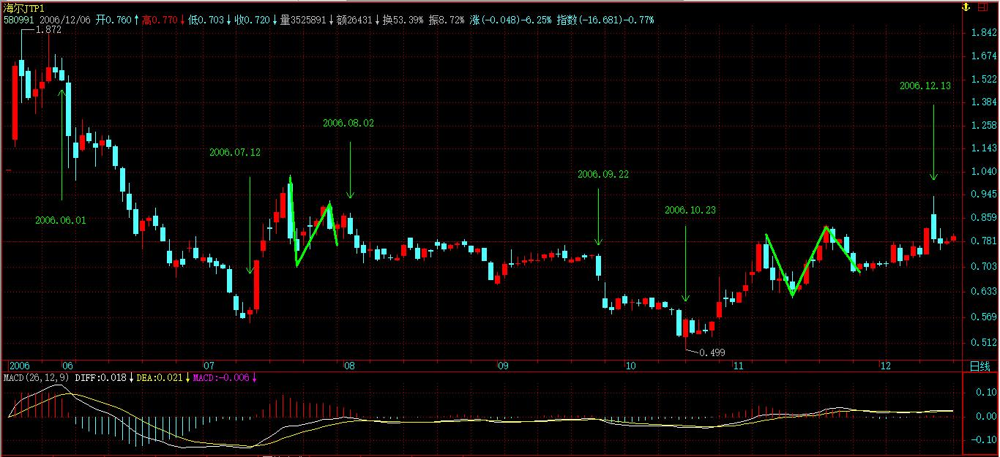
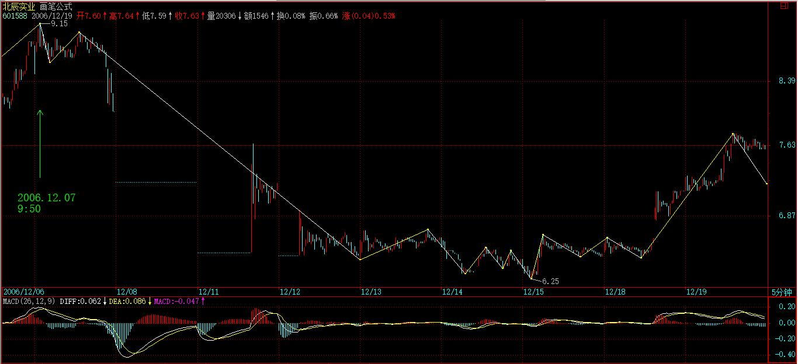

(2006-12-18 11:52:42)
【韶山映山红】博客原文配图。000568泸州老窖 日线图。下面是当时的日线图。】
任何级别的所有走势，都能分解成趋势与盘整两类，而趋势又分为上涨与下跌两类。【韶山映山红】任何级别的所有走势，都能用走势类型这种语言方式去描述。】
【韶山映山红】三级完全分类：1，有没有中枢？没有中枢是次级别以下走势；有中枢是本级别走势。2，一个中枢还是多个中枢？一个中枢是盘整；多个中枢是趋势。3，多个中枢的方向？依次向上是上涨；依次向下是下跌。 那么，多个中枢不依次排列，是乱序呢？那就不只是一个走势类型了。】
以上结论，不是从天而降的，而是从无数图形的分析实践中总结出来的，【韶山映山红】对图形进行分析，归纳总结，寻找完全分类的规律。】正如《论语》所说“由诲女，知之乎！知之为，知之；不知为，不知；是知也。”（请看本ID相应系列的解释）【韶山映山红】参见15课笔记的“《论语》详解：给所有曲解孔子的人（39）”。缠师的解读是：“孔子说：实践教导你，以此而有智慧啊。依智慧而进一步实践，以此而有新的智慧；不依以实践而有的智慧进一步实践，就不会有新的智慧。这，就是最根本的智慧。”】
这个从实际图形中总结出来的简单经验，却是一切有关技术分析理论的唯一坚实基础。【韶山映山红】走势的结构分析，是一切有关技术分析理论的唯一坚实基础。】
这个基础，所有接触技术分析的人都知道，【韶山映山红】上涨，下跌，震荡。走势只有这三种情况。所有接触技术分析的人都知道。】但可惜没有人能深究下去，然后就沉入技术指标、交易系统等苦海不能自拔。【韶山映山红】】试想，基础都没搞清楚，又有什么可立起来？而基础稳固了，技术指标、交易系统等都是小儿科了。【韶山映山红】技术指标的运用，交易系统的建立，都要有走势的结构分析做基础。】
由上可得到“缠中说禅技术分析基本原理一”：【韶山映山红】第一条技术分析的基本原理。也就是说，这条原理是缠论最基础的，可以作为其他一切的基础。】
【韶山映山红】由上可得到，怎么得到的？
任何级别的任何走势，都可以分成三种走势类型。
任何级别的任何走势，都不会永远延伸下去。
那么，相应的走势类型，也不会永远延伸下去。
所以，任何级别的任何走势类型，终要完成。】
任何级别的任何走势类型终要完成。后面一句用更简练的话，就是“走势终完美”。【韶山映山红】任何级别，任何走势类型，都一样，“终要完成”。走势终完美。走势必完美。两种用词，都是同一个意思。完美，完成，也是一个意思。】
这个原理的重要性在于把实践中总结出来的、很难实用的、静态的“所有级别的走势都能分解成趋势与盘整”，【韶山映山红】“所有级别的走势都能分解成趋势与盘整”，是静态的，很难实用。完成的走势类型才可以确定的“分解成趋势与盘整”，所以这种实践中总结出来的分类，更像是复盘分析，所以是静态。】
转化成动态的、可以实用的“走势类型终要完成”，【韶山映山红】走势类型终要完成是动态的。是什么样的动态呢？★当下的走势，不管怎么划分，总是属于某种走势类型的某个阶段，这个没有完成的走势类型，要成为某种完成的走势类型，就会有动态的不断演化，而后续的演化，有一个完全分类，我们在完全分类的基础上，就可以有配套的应对系统，就是可以实用的。】
这就是论语所说的智慧：“所有级别的走势都能分解成趋势与盘整”是“不患”的，是无位次的，而“走势类型终要完成”的“走势终完美”以“所有级别的走势都能分解成趋势与盘整”的无位次而位次之，而“患”之。【韶山映山红】“所有级别的走势都能分解成趋势与盘整”，这是静态的。也就是说，对已经完成的走势，我们可以做这样明确的划分。但是当下的走势，更多的时候是处于没有完成的状态，特别是盘整的过程中，我们甚至没法确定当下处于一个什么样的走势类型中，所以缠师说“很难实用”。走势终完美就给了我们分析走势的方法和线索，让缠论能够运用在当下。学习参考课外读物：《天幕红尘》。“实事求是”。“见路不走”。】
因为在实际操作中，面对是都是鲜活的、当下的，而正如《论语》所说的，“由知、德者，鲜矣！”，必须直面这种当下、鲜活，才能创造。【韶山映山红】缠中说禅白话直译：“子曰：由知、德者，鲜矣！”孔子说：蹈行、践履“闻、见、学、行”“圣人之道”智慧、所得的君子，永远处在创新、创造之中啊。】
而在任何一个走势的当下，无论前面是盘整还是趋势，都有一个两难的问题：究竟是继续延续还是改变。【韶山映山红】这个当下并不说什么走势类型终要完成，走势终完美，而是对走势做下一步的完全分类：延续，改变。】
例如，原来是在一个趋势中，该趋势是否延续还是改变成相反的趋势或盘整，这样的问题在当下的层次上永远是“不患”的，无位次的。任何宣称自己能解决这个两难问题的，就如同在地球上宣称自己不受地球引力影响一样无效，这是任何面对技术图形的人都必须时刻牢记的。【韶山映山红】任何一个走势的当下，究竟是继续延续还是改变，这个两难问题，在当下的层次上，永远是无法解决的。】
但这个两难的“不患”，在“所有级别的走势都能分解成趋势与盘整”的“不患”下，又成了其“患”，就因此可以位次（该问题的理解，可以参考本ID关于《论语》相关章节的解释）。正因为当下的走势是两难的，也就是在不完美到完美的动态过程中，这就构成了其“不患”而位次的基础。“走势终完美”，而走势“不患”地可以分解成趋势与盘整，换言之，“趋势终完美，盘整也终完美”。【韶山映山红】当下的走势是两难的，把走势分解成走势类型，走势类型是可以完成的，这就有了分析判断的基础。没有新的产生，就延续。不延续了，就会产生新的。看似废话，实际上把问题化解了，不需要去预测是延续还是改变，而是把问题转化为：是否有新的走势类型产生。怎么分析是否有新的产生呢？下面顺理成章地推出中枢的概念，然后用中枢运动的三种形式奠定了缠论完全分类、不测而测的起点。】
“走势终完美”这句话有两个不可分割的方面：【韶山映山红】一体两面：完成就会转化，转化就确认完成。】
任何走势，无论是趋势还是盘整，在图形上最终都要完成。【韶山映山红】在图形上，就是在形态上。】
另一方面，一旦某种类型的走势完成以后，就会转化为其他类型的走势，这就是“不患”而有其位次。【韶山映山红】还是那两个完全分类：延续，改变。不延续了就会改变。不改变就是延续。】在技术分析里，不同的位次构成不同的走势类型，各种位次以无位次而位次。【韶山映山红】在一个走势类型没有完成之前，不能定性、不能命名。】而如何在不同位次之间的灵活运动，是实际操作中最困难的部分，也是技术分析最核心的问题之一。【韶山映山红】不同走势类型是如何一步一步量变、质变的？两个走势类型的连接点的判断，是缠论技术分析最重要的。】
为了深入研究这复杂问题，必须先引入缠中说禅走势中枢的概念：
【韶山映山红】数学家下定义的方式：当缠师想发明一个新的定义“中枢”的时候，她在这个定义的背后，是想达到怎样一种目的？换句话说，她想让这个定义实现哪些事情？】
【韶山映山红】中枢是递归函数的基础概念。走势类型的定义，并不需要建立在中枢的基础上。级别和递归的定义才是建立在中枢的基础上的。】
【韶山映山红】走始终完美。任何级别的任何走势类型终要完成。走势类型是如何完成的？完成之后又怎么样？怎样转化为其他类型的走势？为了深入研究走始终完美这些复杂的问题，必须先引入中枢的概念。有了中枢，就有了递归，就有了级别。】
【韶山映山红】为什么叫做“中枢”？
中枢，指事物中起主导作用的部分。共有四层意思：天体中心、中央政府、兵部、脑部神经等。
１，天体运行的中心；中天。
汉 扬雄 《太玄·周》：“植中枢，周无隅。”
范望 注：“正午为中，枢立则运，言二极相当，为天杠抽运。”
唐 卢照邻 《赠许左丞从驾万年宫》诗：“中枢移北斗，左辖去南台。”
明 许承钦 《月夜渡东溟》诗：“鱼龙寂无声，朗月炳中枢。”
２，朝内；中央政府。
北宋时，行政权力集权于中书门下，即“政事堂”，位于宫城中线以东，亦称“东府”，军事权力集中于枢密院，与政事堂相对，亦称“西府”，东西两府合计6-10位宰执（宰相、执政），宰执必须文官担任，进士出身，出行皆配清凉伞，群臣避道，礼绝百僚，地位尊崇。故人们认为天下权力集中于中书门下和枢密院，将两府合称“中枢”，以代表中央政府。】
某级别走势类型中，被至少三个连续次级别走势类型所重叠的部分，称为缠中说禅走势中枢。换言之，缠中说禅走势中枢就是至少三个连续次级别走势类型重叠部分所构成。【韶山映山红】划重点：至少三个，连续，次级别走势类型，重叠的部分。】
【韶山映山红】构成中枢的不是三段走势类型，而是三段走势类型所重叠的部分，也就是中枢区间。也就是说，回中枢就是回［ZD，ZG］。】
这里有一个递归的问题，【韶山映山红】高级别中枢由次级别走势定义，次级别走势又需要中枢来定义。】就是这次级别不能无限下去，就像有些半吊子哲学胡诌什么“一分为二”，而“分”不是无限的，按照量子力学，物质之分是有极限的，同样，级别之次也不可能无限，在实际之中，对最后不能分解的级别，其缠中说禅走势中枢就不能用“至少三个连续次级别走势类型所重叠”定义，而定义为至少三个该级别单位K线重叠部分。【韶山映山红】最后不能分解的级别没有次级别走势类型，所以这一条放宽为该级别单位Ｋ线。其他关键词不变：至少三个，连续，重叠的部分。】也就是说，在一开始，在最小级别上，中枢定义就是特别修订的，并不符合真正的中枢定义。】
【韶山映山红】这里把“最后不能分解的级别”的中枢“定义为至少三个该级别单位K线重叠部分”，这样在数学上似乎没有问题，递归也没有问题，操作就有问题了，最低级别做分析就会中枢满天飞，而且各种的交叉、重叠，算扩张还是升级，分分钟就疯掉了，根本就没有可操作性。事实上，缠师也没有在1分钟图上拿3根K线当中枢看待，还经常会说到1分钟的次级别甚至次次级别，恨不得是每一笔交易为最低级别。62课以后引入了分型、笔、线段的概念之后，最低级别才真的具有了可操作性，但即使最低级别定为1分钟，形成的1分钟中枢也比17课这个时候的1分钟中枢大了好几级，而且虽然中枢是说清楚了，适合操作了，但是那个中枢和前面课程的中枢就不是同一个东西了，不只是级别大了很多。】
【韶山映山红】初始化的中枢定义为“三个该级别单位K线重叠部分”，看似严密，其实说得很粗糙。因为，并不是任意3个K线重叠都是缠师心里所想的那个中枢。缠师的本意还是有更低级别的三次重叠。而很多K线重叠并不具备这种形态。★以后研究。】
【韶山映山红】不论是笔线段中枢的初始化，还是三K线中枢的初始化，最低级别的模糊都会带到初始化元素中，进而影响各个级别的划分。真正完美贴合实际的正确划分是不存在的。★★★可以做个专题，以后研究。】
一般来说，对实际操作，都把这最低的不可分解级别设定为1分钟或5分钟线，当然，也可以设定为1秒种线，【韶山映山红】现在的股票软件的最低级别是1分钟线，没有秒的级别，分时图实际上就是1分钟收盘价线。即使自己努力追求精细的更低级别也没有意义，所谓的每笔成交记录其实也是若干时间段的每笔成交的集合。】但这都没有太大区别。【韶山映山红】不知道缠师为什么说没有太大区别。当时的人如果真的去图上画中枢，估计都疯掉了。难怪问答里面有那么多人问中枢的重叠是什么意思。】
【韶山映山红】这里是缠师第一次提到“递归”这个词。缠论的“走势终完美”比外面那些妖艳的东西更出彩的就是拥有了递归的性质。
递归关系就是自己和自己建立关系。我们接触最多的递归，是指程序运行的过程中调用自己。
作为缠论技术系统极其重要的一个词汇，缠师没有给出一个明确的定义。而真正理解缠论的递归，基本上要学完缠论技术系统的全部课程，对分型、笔、线段、走势类型都有了深刻的认识，才行。】
【韶山映山红】缠师原文经常使用的Fibonacci斐波纳契数列也是典型的递归案例：
F(0) = 1 ｛初始化函数｝
F(1) = 1 ｛初始化函数｝
F(n) =F(n-1) + F(n-2) （对所有n>1的整数） ｛递归函数｝
【韶山映山红】斐波纳契数列的初始化函数必须有两个，这样才能让递归函数自恰。缠论的递归函数不是这样的，那么，初始化函数为什么要有笔、线段两个？可以做个专题，以后研究。】
有了上面的定义，就可以在任何一个级别的走势中找到“缠中说禅走势中枢”。【韶山映山红】中枢并不要求从最低级别开始递归，完全可以直接看图“找”中枢。前提是我们有这个看图能力。】有了该中枢，就可以给“盘整”、“趋势”给出一个最精确的定义：【韶山映山红】走势类型的定义是根据中枢的情况来的，所以是先找中枢，然后根据中枢定义走势类型。很直观。先有蛋还是先有鸡？缠论是先有中枢，后有走势类型。】
缠中说禅盘整：在任何级别的任何走势中，某完成的走势类型只包含一个缠中说禅走势中枢，就称为该级别的缠中说禅盘整。【韶山映山红】换句话说，盘整就是只包含一个走势中枢的、完成的走势类型。划重点：完成的走势类型，只包含一个中枢。中枢容易找，那么，怎么判断这个盘整是一个完成的走势类型？完成的标志是什么？就是第三类买卖点。第三类买卖点完成的是中枢延伸震荡，而不是走势类型本身。走势类型还可以继续次级别的走势，最终演化成更大级别的盘整，甚至本级别趋势。也就是说，用第三类买卖点来定义盘整的结束，只是当前这个走势的一个终结。】
缠中说禅趋势：在任何级别的任何走势中，某完成的走势类型至少包含两个以上依次同向的缠中说禅走势中枢，就称为该级别的缠中说禅趋势。该方向向上就称为上涨，向下就称为下跌。【韶山映山红】划重点：完成的走势类型，至少包含两个以上的中枢，依次的两个以上，同向的中枢。怎么判断这个趋势是一个完成的走势类型？完成的标志是什么？就是背驰转折。趋势比较简单，复杂的是，即使背驰转折了，趋势的最后一个中枢升级，依然可能让已经完成的走势面目全非。这一课定义趋势包含两个以上的中枢，也就是说，缠论开始进化到a+A+b+B+c的时代。】
那么，是否可能在某级别存在这样的走势，不包含任何缠中说禅走势中枢？
这是不可能的。因为任何图形上的“向上+向下+向上”或“向下+向上+向下”都必然产生某一级别的缠中说禅走势中枢，没有缠中说禅走势中枢的走势图只意味着在整张走势图形上只存在两个可能，就是一次向下后永远向上，或者一次向上后永远向下。【韶山映山红】这里说的是“任何图形上”都必然存在“某一级别”的中枢。如果不管其他级别，只说某一个具体的级别，很多的当下是一个该级别中枢都没有的，这是因为走势还没有完成。下面的原理二说的是某一个具体级别的走势必然包含一个以上的该级别中枢。】
要出现这两种情况，该交易品种必然在一定时期交易后永远被取消交易，而这里探讨走势的一般情况，其前提就是该走势可以不断延续下去，不存在永远取消交易的情况，所以，相应有
“缠中说禅技术分析基本原理二”：任何级别任何完成的走势类型，必然包含一个以上的缠中说禅走势中枢。【韶山映山红】任何完成的走势类型都有中枢存在。这里说的是任何一个级别的走势类型都有该级别的中枢。这是第二条基本原理。缠论只有这两条基本原理。】
由原理一、二以及缠中说禅走势中枢的定义，就可以严格证明：
【韶山映山红】
技术分析基本原理一：任何级别的任何走势类型终要完成。
技术分析基本原理二：任何级别任何完成的走势类型，必然包含一个以上的缠中说禅走势中枢。
某级别走势类型中，被至少三个连续次级别走势类型所重叠的部分，称为缠中说禅走势中枢。】
“缠中说禅走势分解定理一”：任何级别的任何走势，都可以分解成同级别“盘整”、“下跌”与“上涨”三种走势类型的连接。【韶山映山红】划重点：同级别。】
【韶山映山红】
“缠中说禅技术分析基本原理一”：任何级别的任何走势类型终要完成。
完成了，然后呢？完全分类：升级，不升级。
升级，就是当下这个包含其中。这样就是新的没完成。
不升级，就是开始下一个同级别。
所以，推理是同级别。】
【韶山映山红】
“缠中说禅技术分析基本原理二”：任何级别任何完成的走势类型，必然包含一个以上的缠中说禅走势中枢。
必然有中枢。完全分类：一个，多个。
一个，盘整。
多个，完全分类：重叠，不重叠。
重叠，是更大级别。
不重叠，是趋势。】
【韶山映山红】
最终，都可以分解成同级别“盘整”、“下跌”与“上涨”三种走势类型的连接。】
“缠中说禅走势分解定理二”：任何级别的任何走势类型，都至少由三段以上次级别走势类型构成。【韶山映山红】换句话说，最简单的走势类型就只有三段次级别走势。不够三段的，就是走势没有完成。做分解的时候，最简单的就是尝试三三三划分，同时看是否有某一个的延伸。】
这些证明都很简单，就和初中几何的证明一样，有兴趣自己来一下。
由上面的原理和定理，就可以严格地给出具体操作唯一可以依赖的两个坚实的基础。【韶山映山红】具体操作的两个坚实基础：一买点和二买点。】
因为某种类型的走势完成以后就会转化为其他类型的走势，对于下跌的走势来说，一旦完成，只能转化为上涨与盘整，因此，一旦能把握下跌走势转化的关节点买入，就在市场中占据了一个最有利的位置，而这个买点，就是前面反复强调的“第一类买点”；【韶山映山红】下跌走势完成的时候，转化为其他走势的关节点就是第一类买点。第一类买点是操作“最有利的位置”。 均线系统的时候对一买点有过一个粗糙的定义，这里开始做进一步明确的界定：走势转化的关节点。 也就是说，对下跌趋势来说，不管是本级别趋势背驰还是小转大，都以走势转化的关节点为准。】
而因为无论是趋势还是盘整在图形上最终都要完成，所以在第一类买点出现后第一次次级别回调制造的低点，是市场中第二有利的位置，为什么？因为上涨和盘整必然要在图形上完成，而上涨和盘整在图形上的要求，是必须包含三个以上的次级别运动，因此后面必须还至少有一个向上的次级别运动，【韶山映山红】这个时候还是主张二买不会低于一买，一旦跌回一买的位置就要退出。背驰点开始的上下上，二买就是第二段的下的终点，所谓保证就是这个第三段的上。】这样的买点是绝对安全的，其安全性由走势的“不患”而保证，这，就是在前面反复强调的第二类买点。【韶山映山红】第一类买点出现后，第一次次级别回调制造的低点就是第二类买点。“趋势+反趋势”的时候，第二类买卖点是次级别回踩的结束点。“趋势+盘整+反趋势”的时候，第二类买卖点还可以是盘整的结束点。参见下图和25课的案例分析。一买和三买都只有一个，二买可以是一串。】

买点的情况说了，卖点的情况反之亦然。
综上所述，就不难明白为什么本ID在前面反复强调这两类买卖点了。因为该两类买卖点是被最基础的分析所严格保证的，就如同几何中严格定理一样，只要找准了这两类买卖点，在市场的实际走势中是战无不胜的，是波涛汹涌的市场中最坚实的港湾。
关于该两类买卖点与走势及上述原理、定理间密不可破的逻辑关系，必须切实理解体会，这是所有操作中最坚实、最不能混淆的基础。【韶山映山红】走势终完美。下跌趋势终完美。完美后必然转变为盘整或者反趋势。转折点就是一买。这个盘整或反趋势也必完美。任何完成的走势都有中枢。这个盘整或反趋势也必有中枢。中枢至少有三段次级别走势重叠。这个盘整或反趋势也必有三段次级别走势重叠。回踩的第二段终点就是二买，必有第三段的利润空间。】
由上面的原理、定理，就可以继续证明前面已经说过的“缠中说禅买卖点定律一”：【韶山映山红】只有这一个买卖点定律。没有找到买卖点定律二。】
任何级别的第二类买卖点都由次级别相应走势的第一类买点构成。【韶山映山红】二买的次级别必须是背驰确认。30分钟下跌趋势的二买点是5分钟向下背驰的一买点之后的、5分钟向上走势再5分钟回踩的终点，5分钟回踩的终点由1分钟背驰确认这个终点。
【韶山映山红】从这个定律引出一个问题：只有趋势结束的时候才有一买吗？盘整结束的时候算不算一买？我一直主张也算。次级别盘下形成二买的情况，“次级别相应走势的第一类买点”就是盘整结束的一买。】
这样，就像前面曾说过的，任何由第一、二类买卖点构成的缠中说禅买卖点，都可以归结到不同级别的第一类买卖点。由此得到“缠中说禅趋势转折定律”：
任何级别的上涨转折都是由某级别的第一类卖点构成的；任何的下跌转折都是由某级别的第一类买点构成的。
注意，这某级别不一定是次级别，因为次级别里可以是第二类买卖点，【韶山映山红】什么情况下的转折，次级别里不是第一类买卖点，而是第二类买卖点？★很多种说法。现在能够接受是：二买跌破一买的情况下，下跌转折的次级别是二买。】小转大的转折，如果新高且盘背，就是第二类买卖点。】而且还有这种情况，就是不同级别同时出现第一类买卖点，也就是出现不同级别的同步共振，【韶山映山红】区间套就是利用这样的共振。】所以这里只说是某级别。
本ID以上对技术分析的理论构建，绝对前无古人，就像欧几里德之于几何一样。这是为纷繁的技术分析找到了一个坚实的理论基础，由这些原理、定理，可以继续引申出不同的定理，就像几何里面一样。这些定理，都是抛开一切偶然因数的，而实际的操作，必须建立在此之上，才会长期立于不败之地。【韶山映山红】不计较一城一地的得失，长期立于不败之地。】
这些问题以后还要逐步展开，这里先把两个前面已经让各位思考例子来分析一下，让各位对趋势、级别、走势中枢等概念有一个感性的认识，毕竟上面抽象的方法并不是每个人都能理解的：
驰宏锌锗：为什么从2004年6月2日到2005年7月27日，构成标准的“下跌+盘整+下跌”的走势，【韶山映山红】这里的盘整和趋势是同级别。】
【韶山映山红】600497驰宏锌锗。】
而类似的图形在580991上不算，这唯一的原因就是因为后者在日线的下跌中并不构成日线级别的缠中说禅走势中枢，
【韶山映山红】580991海尔JTP1。】
而在30分钟线上，这个中枢是明确的。所以580991只构成30分钟级别上的“下跌+盘整+下跌”。
【韶山映山红】580991海尔JTP1。】
其后的上涨，对600497驰宏锌锗，2005年7月27日到10月25日，明确地出现在日线上的上涨走势（为什么？因为在日线上明确地看到两个缠中说禅走势中枢）。
【韶山映山红】600497驰宏锌锗。】
而580991从2006年10月23日到12月13日，只构成日线上的盘整走势（为什么？因为在日线上明确地看到一个缠中说禅走势中枢）。
【韶山映山红】580991海尔JTP1。】

两者力度上有如此区别的技术上的原因就是上面两个：一、“下跌+盘整+下跌”走势的出现级别不同，一个是日线，一个是30分钟的。二、其后的第一段走势，一个是日线上涨，一个是日线盘整。【韶山映山红】日线下跌趋势＋日线盘整＋日线下跌趋势，然后日线上涨趋势。30分钟下跌趋势＋30分钟盘整＋30分钟下跌趋势，然后日线盘整向上。】
以上内容，足够各位消化几天了。后面还有很多内容，逐一写来。但请注意版权，发现抄袭的本ID要抓来狗头铡给铡了。
最后布置几条思考题：
1、连接两相邻同级别缠中说禅走势中枢的一定是趋势吗？【韶山映山红】不一定形成了趋势，可能是盘整，也可能是线段类走势。】一定是次级别的趋势吗？【韶山映山红】也不一定是次级别，可以是更低级别，甚至什么也没有，直接跳空。】
2、背驰是两相邻同向趋势间，后者比前者的走势力度减弱所造成的，【韶山映山红】这里可以视为缠论背驰的一个定义：两相邻同向趋势间，后者比前者的走势力度减弱所造成的走势形态，就是背驰。】如果用均线或MACD等判断其力度，一定要在同级别的图上吗？【韶山映山红】均线可以在同级别图上。MACD往往是高级别的更方便对比。】同级别的MACD红绿柱子背驰一定反映某级别趋势间出现背驰吗？【韶山映山红】不一定。还要结合黄白线的分析等综合判断。后面专门有一课讲MACD辅助判断。】是相应级别的趋势出现背驰吗？【韶山映山红】不一定。经常是次级别的背驰。】
3、盘整的高低点是如何造成的。（这个问题有点难度，提示，用缠中说禅走势中枢以及级别等进行分析。）【韶山映山红】背驰的不同力度形成了不同高度水平。】
好好消化，如何把抽象的理论变成自己的直觉，无论是谁，可不是一两天的事情。
2006-12-18 11:56
[匿名] ataoo0 2006-12-18 11:54:42
可惜周五没受到楼主的托梦，还是希望楼主以后能多多梦到此类情景～
=========
消息是没意义的，本ID那只是八卦一下。这几年的主题，本ID早说过了，就是收购中国。中国最大的特色是什么？人多，去年，本ID就一直和很多国外的基金接触，他们最大的目标就是中国的快速消费品市场，虽然本ID也很烦鬼佬，但他们绝对不是傻子。可惜，国人里的傻子太多了，而且傻子还话语权。
2006-12-18 12:05
小明 2006-12-18 12:07:39
双汇，青啤，还有谁？哦，请问缠mm对林园感觉如何？有没有见过他？
======
对不起，本ID只对市场本身有兴趣，市场里的所谓英雄狗熊，一点兴趣都没有。牛人，本ID见过太多，可惜，最后基本都死了。【韶山映山红】林园，2006年的牛市冒出的民间股神。号称1989年8000元进入股市，2006年10月底持股市值达20亿元。2006-10-19上海第一财经<财富人生>主持人叶蓉率领的十余名上海股市精英挑战的节目录制中，被王元庆看破交割单和资金市值明细表作假的破绽，神话终结。】
2006-12-18 12:11
[匿名] 喝杯小酒 2006-12-18 14:38:04
今儿哥哥批评缠妹几句
1、当前大牛市，不是谈细技术的时候，你的理论不适合当前，多教点选股大思路。
2、你的理论有些过时，单说指标这东西，用的人多了，就不准确了。
3、不许再说“消息准确”的话，那不算啥，高人应该高在别处。
=========
整个大牛市的图景，本ID 1年半前就画好了，第一轮成分股，成分股就是那300只，还选什么选？
现在说的不是指标，先把问题搞清楚。
消息准确怎么了，能全国消息最准确的，代表了什么？代表了一种行业地位。
2006-12-18 15:15
[匿名] 中间体 2006-12-18 15:11:25
缠中说禅走势中枢的概念：某级别类型走势中，被至少三个连续次级别类型走势所重叠的部分，称为缠中说禅走势中枢。
次级别的走势怎样去重叠高级别??? 60分钟K线图去模拟日K线图吗?? 请举例弄懂中枢很关键啊 !!
==========
不是次级别重叠高级别，是次级别之间的重叠。
2006-12-18 15:18
[匿名] 想飞 2006-12-18 15:04:25
LZ，问好！“而580991从2006年10月23日到12月13日，只构成日线上的盘整走势（为什么？因为在日线上明确地看到一个缠中说禅走势中枢）。”这句话中提到的那个缠中说禅走势中枢是指10/23~11/8，还是11/14~11/21，如果看30分钟图，应该是指前者对吗？
=======
都不对，是11月8日到11月28日，是三个次级趋势构成 。

2006-12-18 15:22
再布置一个具体的股票
请分析一下北辰12月7日以来走势的具体级别、走势类型。
【韶山映山红】601588北辰实业。】

2006-12-18 15:26
[匿名] 中间体 2006-12-18 15:23:32
缠姐, 给举个例讲一下吧, 什么样叫重叠??
========
580991从11月8日到11月28日，三个次级趋势构成的日线中枢。
【韶山映山红】580991海尔JTP1。】

2006-12-18 15:27
[匿名] 小小 2006-12-18 15:34:29
请问禅姐,600519在10上位第二次缠绕后8.7日形成背弛,那第一个问题:10上位的第一次缠绕是7.4日还是7.24日?【韶山映山红】这人的“10上位”就是男上位。】
第二, 10上位的第一次缠绕是那一天结束的?这两个问题是我最湖涂的请禅姐给说明,我一直坐在这里等你!
【韶山映山红】600519贵州茅台。】
==========
用均线或MACD看背驰都是辅助性的，都不是最重要的，最重要的是把今天的搞清楚，这是最重要的。【韶山映山红】缠师已经开始不愿意纠缠于均线系统的男上位女上位和缠绕了。】
关于背驰相关的问题，本ID后面会继续说的。先把逻辑关系搞清楚：走势--级别--趋势--前后趋势比较--背驰--用均线等辅助判断背驰【韶山映山红】】
所以先把前面搞清楚，别困在一些某节上，前面明白了，后面自然清楚。
难道没有均线、没有MACD就判断不了背驰？显然不是。那只是辅助。【韶山映山红】均线和MACD都是斜率变化率及其延伸长度的表现形式。】
2006-12-18 15:47
各位好好研究吧，真明白了，终身受用。如果你希望知道什么黑马之类的，这里没有，300只成分股，牛市结束后一看，都是黑马，牛市里有什么黑马，都是黑马，还用找吗？关键是你是否有持有的信心。
牛市炒股票还用这么费心？前面本ID已经多次说过，牛市首先要灭的就是熊市心态，有时间先把基础搞好吧，本ID这里不帮任何人，你们个个是佛，本ID忙个什么帮？别憋屈自己了。
2006-12-18 15:55
[匿名] 中间体 2006-12-18 15:53:12
缠姐, 给举个例讲一下吧, 什么样叫重叠?? ========
=======
缠中说禅 2006-12-18 15:27:52
580991从11月8日到11月28日，三个次级趋势构成的日线中枢 。
--------------------
[匿名] 中间体 2006-12-18 15:23:32
缠姐,我知道今天一课很重要,你能否具体讲一讲,三个次级趋势如何构成的日线中枢??我用60分,30分,15分钟图对比看不出什么名堂啊,麻烦了,碰到如此笨的学生.
=======
这不最简单的事情吗？三段走势，不正好构成一个重叠吗？区间就在0.677与0.803之间，构成中枢。【韶山映山红】缠师居然没被这样的问题烦死。】

2006-12-18 15:58
[匿名] 游客 2006-12-18 16:05:12
“中枢”的概念还是不清楚。烦请解惑：
请教：“某级别类型走势中，被至少三个连续次级别类型走势所重叠的部分”比如是指周线、日线、小时线的K线重叠吗？
========
不是几条K线的重叠，是至少三个连续次级别类型走势重叠部分所构成。
2006-12-18 16:12
[匿名] 中间体 2006-12-18 16:07:26
这不最简单的事情吗？三段走势，不正好构成一个重叠吗？区间就在0。677与0。803之间，构成中枢。
请讲明, 从哪到哪是一段, 哪三段???
========
这么简单的问题自己去思考，本ID回答你是害了你，你就不思考了。那几天，在图上就这下上下的三段，这还用本ID说吗？

2006-12-18 16:13
[匿名] 心禅 2006-12-18 16:03:56
“禅主”601588“北辰”作业：
从其30分钟图看，12月7日-12月12日为下跌，12日-18日13：00为盘整期，今天下午上涨；一个“下跌+盘整+上涨”
”禅主“我也判断它周一会结束盘整，可我按“下跌+盘整+下跌”原则考虑，判断它今天会再次下探，为什么会错？请指正
=========
谁告诉你股票一定要走出“下跌+盘整+下跌”的？基本概念要搞清楚。
2006-12-18 16:14
公告
以后要本ID直接告诉答案的，本ID一律不回答，回答是害了各位，各位必须先思考，把自己的答案找出来，本ID来给各位评判，这样才有助于各位。
2006-12-18 16:16
[匿名] 一剑 2006-12-18 16:16:17
缠姐：和你探讨《货币战争和人民币策略》一文，我认为目前中国经济高度依赖美国消费市场，大量顺差间接享用美国经济虚拟化所带好处，所以在目前应该配合美圆贬值战略，以继续保持美国经济体系运转，所以第一买入点应该在未来而不是现在。请赐教！
========
2005年7月前，人民币和美圆直接挂钩，就成了双核，对世界其他体系进行盘剥，中国借机长大，如藤绕树一般。而现在，是美国对所有人的盘剥，中国现在刚进入破位之中，把一个好好的“上涨+盘整+上涨”弄成“上涨+盘整+下跌”，这时候还谈什么第一类买点？鼻子都给人牵着走了。
另外，少用什么配合的说法，中国人凭什么要配合美国。中国对美国只有两种：一种叫利用，一种叫被利用。
可惜现在是被利用了，一群大傻瓜！
2006-12-18 16:24
[匿名] 中间体 2006-12-18 16:18:34
谢谢, 其实, 我们是没理解缠姐的表达, 这个'重叠'到底是什么?? 怎样就是重叠? 我们不理解啊.
[匿名] 求知 2006-12-18 16:18:38
“中枢”的概念太重要了，也太抽象了，本人愚笨，还请结合例子细致一点解释。先谢了！
=========
这不最简单的问题？A段经过8元到18元，B段经过18元到12元，C段经过12元到24元，你说这ABC三段的重叠部分在什么地方？
如果这都回答不出来，本ID也没办法了，因为这幼儿园的小朋友都能回答。
2006-12-18 16:27
各位把下面这个定义好好读读：
缠中说禅走势中枢的概念：某级别类型走势中，被至少三个连续次级别类型走势所重叠的部分，称为缠中说禅走势中枢。换言之，缠中说禅走势中枢就是至少三个连续次级别类型走势重叠部分所构成。
关键是这几词：三个、连续、次级别、重叠。
例子，580991在11月8日到11月28日，构成0.677到0.803的中枢。一看就明白，看图明白才是真明白。

2006-12-18 16:34
[匿名] 如 2006-12-18 16:30:03
当下最紧要的一个请教问题,望不吝赐教.
关于在上一课中,提到的,如何判断盘整后的图形,是上涨还是会下跌. 能否说明.?
目前股市,相当多的个股,正是上涨+盘整的走势,或者是上涨+下跌+盘整.........
而如何判明这盘整治之后的走势,还有,如何判断什么是有效突破,成了偶目前的当务之急, 请详细说明,不胜感激..
=======
你看到ID文中的作业没有？
3、 盘整的高低点是如何造成的。（这个问题有点难度，提示，用缠中说禅走势中枢以及级别等进行分析。）
把这个回答出来，就能解决你的问题。
2006-12-18 16:36
[匿名] 巴索林 2006-12-18 16:00:26
一直在看缠mm的文章，觉得缠mm的思想既有广度又有深度，思维严谨，逻辑性强，而且文章诙谐、幽默。令我辈从中获益不少。对缠mm有教无类，诲人不倦的精神深感敬意和感谢。但心中有一疑惑，在此顺便问问缠mm，望解答。既然高手无论在牛市还是熊市都能在股市提款，为什么缠mm2001年~2005年却不看一眼股票呢？是否像你这样的高手也要回避熊市呢？那么职业股民在熊市中岂不要转行了？
==========
本ID又不等钱花，为什么要花精力在熊市里忙？有技术，熊市一样挣钱，这没错，但这种钱本ID早没兴趣了。
人生有很多事情可以干，关键是要明白当下最值得干什么。有大牛市，本ID当然不会错过，那种破熊市里的破行情，值得本ID去浪费时间吗？
2006-12-18 16:41
本ID十分理解各位急着挣钱的心理，但这种心理本来就是市场参与者的大忌，连自己的心都控制不住，对自己的贪婪、欲望都不能控制，是不能在市场中长久成功的。
心态平和点，焦躁没有智慧。
2006-12-18 16:48
[匿名] 一剑 2006-12-18 16:44:58
“2005年7月前，人民币和美圆直接挂钩，就成了双核，对世界其他体系进行盘剥，中国借机长大，如藤绕树一般。而现在，是美国对所有人的盘剥，中国现在刚进入破位之中，把一个好好的“上涨+盘整+上涨”弄成“上涨+盘整+下跌”，这时候还谈什么第一类买点？鼻子都给人牵着走了”
---------
就好象两个壮女人去逛面首店，面首店只有一个快被榨干了的小面首，两个壮女人如何盘剥啊？只怕落个整个面首店崩盘，所以现在只好让美国这个壮女人先盘剥，我们先听听声音，否则美国这个壮女人没有面首活不下去了，我们也无法从她身上吸油了，连个淫声都听不见了。。。。
=======
不对，而是一个大蛋糕，美国人习惯性占全份的，习惯性分蛋糕，而某些蠢人或别有用心者有意无意地顺着美国人去了。
中国的事情其实一直很简单，不是蠢人太多，而是汉奸太多。
2006-12-18 16:56
[匿名] 小小 2006-12-18 16:52:25
禅姐,600519在10上位第二次缠绕后8.7日形成背弛,那10上位的第二次缠绕是那一天开始那一天结束呀？
=======
你看不到本ID上面的回答吗？复制如下：
用均线或MACD看背驰都是辅助性的，都不是最重要的，最重要的是把今天的搞清楚，这是最重要的。关于背驰相关的问题，本ID后面会继续说的。先把逻辑关系搞清楚：
走势--级别--趋势--前后趋势比较-背驰-用均线等辅助判断背驰
所以先把前面搞清楚，别困在一些某节上，前面明白了，后面自然清楚。
难道没有均线、没有MACD就判断不了背驰？显然不是。那只是辅助。
2006-12-18 16:58
公告
各位知道为什么智慧难得吗？就因为偷心不死，整天想着捷径，想着一夜暴富。你看看真正成功的人，有哪个是靠中彩票的？【韶山映山红】何谓“偷心”？就是不愿意付出努力就想得到结果，“整天想着捷径，想着一夜暴富。”天道酬勤。】
要在市场上成功，首先要把这偷心给废了，否则学什么都没用，一到场上就犯糊涂，然后就后悔、自责，然后又继续犯糊涂。
道理是死的，用的是人，人没道理，什么道理都没用。【韶山映山红】人没道理，什么道理都没用。知行合一，才是“知”。】
没错，本ID可以告诉你消息，让你买所谓的黑马，但就算让你买了，你可能也守不住。你回头看看，有多少黑马是你曾经买过的，如果都留到现在，你还用找黑马吗？
别说找不到黑马，而是好好想想，为什么黑马都避着自己。
2006-12-18 17:06
各位，请把那四个作业好好想想吧，如果真想学点什么。先下，再见。
2006-12-18 17:09
【缠中说禅】歪歪的博客 】
(2012-02-18 19:43:37)
学习先生的理论，无疑，是很考验一个人的智力、悟性、耐性、韧性以及人性的。也算上辈子积德，让我无意中看到了先生的博客，虽然看到的时候，离先生病重已经2年。
初初看，到真正认真去看，中间间隔了6个月，因为当时混沌理论应用已经不能满足自己对走势的解读需要，同时也不满足于这样靠天吃饭的操作了。当然，当时已经可以做到较稳定的盈利了。
再一次仔细看，是从无意中论语开始的，自此，认为，一个“立”人方面如此有独到思想的人，其技术理论，绝对值得一看。那时，3平台技术已经基本在脑海成型。
在看了前几篇她关于均线的表述的时候，心服口服的去研究她的理论了，但面临着几个大问题：
一、博客阅读不方便；
二、配图稀少；
三、先生的言语，散落遍地，很难仔细研究。
有鉴于此，便邀约了诸多网络好友（约20号人），前后耗费一年多时间，分工整理，篦子一般将整个博客的每一个角落都搜罗彻底，由我负责总编辑以及批注（大家认为我悟性比较好一点），最终整理成册，总共9册a4幅面的书稿，应参与整理好友的一致意见以及当时的客观条件，书籍总共只印了30余套，由维晓先生负责总的纸质文本的出稿。分发与参与整理以及其他当时知晓该次整理并且要求支付书籍成本（纸张及油墨成本）的一些朋友。
一边整理，一边校对，在心惊之余，愈感幸运，此生有幸，得遇此手稿。同时，在通篇阅览和实践操作体认之余，对笔和线段做了彻底的研究之后，发现了一个问题，线段构成的走势类型，其最后一段线段内部的类背驰，我该如何抓住？
在期货交易中，往往一个线段内部的运动，其金额涉及往往巨大，对心理承受能力以及资金管理要求程度都很高，同时也不满意应用这种线段操作时，由于对走势最后一段存在顾虑之后，往往导致入场量不能得以充足，或者出场有偏差。于是，便开始了一场寂寥彻骨的3k之旅。
所有的依据，来源于先生的一句话“最小级别的中枢，用3k重叠”来表现。同时她自己也说到，这样的理论表述，较难实践操作。于是潜心对60课以前先生的分解走势的方法进行了仔细的研究，几乎每一张图先生的分段，我都打印了很多张空白的，自己画一次校对一次，但是，效果不如人意，因为此时笔、线段充斥于我的脑海，太熟了。
于是，我根据最基础的中枢的3种变化，以及先生其他的所有的理论，来试图在m1走势上进行分解，当时没有意识到，如果以m5作为假设最低级别进行走势分解，是如何的得力，因为如果研究错了，可以有m1校对，同时也可以有m30来进行校对级别迭代的准确度。如果当时有人能够告诉这样一句话，我将轻松不少。其时，心中已经略有感触，但没有成型。
再一次偶然的，在心绪不好的时候，无意中看到书中先生的一句话，要读懂每一根k线，感觉天地恍如重新打开了一般，欣喜若狂。于是便对每一根k线进行了意义上的思考，当然，采用先生理论上的逻辑去考辨该k线的意义。
这么做的时候，不止一个人对我表示不同程度的无法理解，其中不乏很敬佩的一些现实生活里的操盘高手，他们告诉我，这种方法和新手又有什么区别二致？而且好端端的放弃自己本来已经成型的混沌跟随方法，代价那么大去研究这么个不知真假的理论。再加上每日思考过度，头发都开始脱落，每日都生活在巨大的焦虑和紧迫感之中。总之，压力很大，千倍大于我n年前满仓做多cu的时候。
皇天不负苦心人，某日我仔细的考辨每根k线的意义，并且严格按照这种意义去分段的时候，惊喜的发现，我的分段，和先生的分段是一模一样的，当然，有些小细节处理不一致。于是狂喜的将先生所有的图打印出来，每张自己画了，和先生的比对，发现，除了对某些跳空的处理思路不一致以外，其余的全部一致。这给了我巨大的信心，犹如冬天穿着单衣，有人送了一个热水袋放在我的怀里。
但是，和这几张图比对，还只是第一步，我还要对走势做当下的分解和阅读，从而最终确认我的理解和阅读走势的方法，是真正合乎先生的标准的，而不是我自己创造了一套莫名其妙的招式。那是我最担心的一段日子。直到现在，我还是担心有人会说我篡改先生的理论。在我的眼睛里，这套理论，已经代表着我这辈子最高的理想和追求，我不想自己走入一个弯路。我年岁已经大了。
又是漫长的没日没夜的看走势，每次看完走势（白天黑夜加起来8小时，高强度的阅读m1的每一根k，当下的），我都会瘫软的像一堆泥巴，甚至在夏天的时候，几度出现了缺氧的症状，但是，没有任何人知道，我在干嘛。
看完了，要校对各个级别，校对完了，面临着下一步，真金白银的去试验，一直到如今，历时1年半的日夜思索和操作上的提升以及资金上的反应，证明了我当时的想法和思路没有走弯路。
网络上流传的都是笔和线段的方法，开这个博客的时候，心里就有顾虑，准备再晚几年，等自己真正的将手里的资金变成一个理想中的数字的时候，再出来写一通。但是，太寂寞了，交易令我生活圈子极小，同时因为爱好研究交易，长时间的看盘和研究，已经让我的身体不堪重负，人在上海，生活各方面都陷入一个怪圈，身边没有人可以说话，一天到晚，就只有我自己和自己说话，网络上原来的好友，他们客气的和你搭话，但是这种搭话是建立在客气上的，而不是思想一致上的。而且，有些网络朋友因为不理解，导致很多不必要的情绪上的波动。更多的群里的网友聚集在一起，讨论的烦恼的都是笔和线段如何确立的问题。
于是，我想写出来，或许，能够解除我的这种寂寞感，这种寂寞不是高手寂寞（虽然在背驰的时候有些许寂寞），而是，没有人群的寂寞。
再次声明，3k或许只是解读先生中枢以及整个理论的一个a0而已，并非代表它就是纯正的缠论，土匪虽然很自豪自己开创了一个可能是8千万分之一的独特领悟角度，但是绝对不会强硬的给你的思想加上一个枷锁，认为，3k就是先生真正的分段方法和迭代逻辑。学习，本来就是一种创新，思想上的表述，并不是一种残暴的扼杀他人想象力领悟力的行为。
土匪自己还没有纯熟的运用先生的理论，目前主要的瓶颈在于当下的各级别的区间套以及隐藏在内心极深处的恐惧感。因为日久月累的磨砺，恐惧这种本能已经变得细微和更加不可琢磨，甚至它会改头换面来迷惑你（比如，通过所谓的稳健的概念来迷惑你）。越是细微的东西，也就越是难以去除，祛除的过程，是我所享受的人生仅有的几个小乐趣之一。
如果你对3k有兴趣，可以留言，我会尽量的抽时间来答复，如果你对此保持怀疑意见，我会很尊重你的创新和怀疑思维，但是，请勿来劝告我改正自己的技术。或者非议我的3k构建的a0方法。因为世间有万千法门可以通大道，适合我的不一定就是适合你的，同样，你认为对的，不一定就是对的，我深刻的知道这一点。
也不要认为土匪是高手，土匪，仅仅只是一个交易的狂热爱好者而已，换言之，土匪之所以对交易狂热，是因为交易触及到了土匪内心深处希望完美的打一场或许永远也无法胜利的战争这样一个愿望，这样一个土匪认为人生仅有的几个小乐趣而已的意义所在，而不是通常意义上的胜率或者盈利率等等这些数字。
土匪没有资格被你称为高人，或者老师，所以，土匪没有劝学的动机，或者强烈具备必须帮你答疑解惑的动力。
土匪放弃了笔和线段，并非土匪对笔和线段不了解或者不深入，也并不意味着土匪愿意回复关于笔和线段的问题。希望大家理解。
土匪从来没有志向做先生的1/5之一的理论实践成就者之一，因为这不是土匪的理想所在。
土匪写这些所谓的3k，仅仅只是寂寞，对的，只是寂寞。
最后，感谢缠中说禅先生，指给了我一条通向光明之路。并
再次感谢那些参与整理书籍的好友们，是你们，给了我一个领悟缠论的完美机会，向先生和你们鞠躬致谢！
【缠中说禅】歪歪的博客 】
(2012-02-18 19:44:54)
3k是最低级别的一个过滤器，或者说，是一个触发显现级别的条件开关。运用3k的总体思路和迭代法则是这样的：
a0=3k
初始项a1=F1(3k)；
后续项函数F2，后续的第n项an=F2(中枢-1)。
其中，F1、F2可以是完全不同的两个函数（即构成的规则）。
中枢其构成的规则为F2，即“走势中枢是某级别走势类型中，被至少三个连续次级别走势类型所重叠的部分”这个定义，不做任何改变。
总的关于走势的理解以及读盘、操作策略、资金管理思路，都完全建立在以上2个函数关系。因为中枢定义的存在，所以，逻辑上，可以推算得到，在某个认定为最低级别的走势类型，其中枢的表现，肯定是至少3k重叠。
运用3k是基于试图建立一种最简便最直达走势核心的分解和组合走势的思路，试图将2个函数关系的触发条件关系进行无限接近，以至直接确认最小级别走势的中枢运行，从而通过对最小级别的中枢的解读，快速、当下的显现走势的：1、走势类型；2、走势级别；3：最小级别乃至任何级别的中枢及区间套背驰；
逻辑上可以如此表达，但实际操作中，存在这一定难度。
3k的局限性主要表现在：
1、需要精通缠论的各个知识点；
2、需要丰富的实践体认，从而快速的根据最小级别的背驰，以及最小级别的中枢，对走势进行分解组合；
3k的适用范围（当然是建立在先生的理论基础上的，如果破坏先生理论的条件出现，3k便不存在任何意义）：
1、任何品种任何股票的任何级别走势；
2、如果某一个品种或者走势走势流速非常慢，则可以通过提高其走势时间框架运用3k技术，并由此有效的运用先生的理论。
所以，不存在3k适用或者不适应什么环境的问题。
【缠中说禅】歪歪的博客 】
(2012-02-18 19:45:46)
面对任何走势图，我们都能看到各类红红绿绿的k线（竹节线也类似，其他的就没什么了解），假设用价格在均线之上下关系，来大致判断走势方向的话，我们会发现一个最显然最直观也是最现实的感官印象，任何一段我们认为的上涨，其内部必然是至少有几根绿k的，反之亦然。
如果我们对所有的走势进行一次分类（以上涨为例，下跌亦然）无非如下情况：
1、跳空上涨（涨停，形成1字天梯，其本质也属于跳空上涨）；
2、一段连续上涨的k线，中间只夹杂1根绿k线；
3、一段连续上涨的k线，中间夹杂若干根不等红绿k线，在之后，再形成一段连续上涨；
以上3点，是对走势做了一个最简单的分类，所有走势，都逃不过这3种分类。假设我们认为的设定一个标准，认定跳空的级别是最小的走势，并且是力度最猛的走势，那么显然：
级别：1<2<3；力度：1>2>3.
根据这个最简单直接的分类，我们可以得出一个重要的结论：
任何走势，其级别与力度，是由其内部的逆向走势的级别及力度决定的。
这个结论非常重要，它是我认为切入走势理解的关键，以及理解各级别中枢的钥匙，同时也是先生理论的一个重要理解辅助。
而第三种现象最为常见，所以，我们的重点，便是研究此种现象，其内部是否存在一定的逻辑关系，并且我们可以将此逻辑关系得以显发，从而把握走势整体运行关系。这个工作，先生已经帮助我们完成了，那便是中枢、走势类型、级别以及由此3个最基础概念构建成的缠中说禅理论体系。
由于利用3k重叠来分析走势，直接用m1时间框架，将缺少验证。所以，各位可以用m5时间框架，自己对走势进行分类一下，并且在m1里面来看看，是否你在m5画出的一个次级别走势类型，往往就是很准的一个1分钟走势类型。
【缠中说禅】歪歪的博客 】
【网文】3k之四：关于最低级别中枢的定义
(2012-02-18 19:46:29)
【缠中说禅】歪歪的博客 】
(2012-02-18 19:48:58)
“缠中说禅走势中枢定义(见17课)：
①某级别的走势类型，被至少三个连续次级别走势类型所重叠的部分，称为缠中说禅走势中枢。
②最后不能分解的级别，其缠中说禅走势中枢就不能用“至少三个连续次级别走势类型所重叠”定义，而定义为至少三个该级别单位K线重叠部分。
换言之，缠中说禅走势中枢就是至少三个连续次级别走势类型重叠部分所构成。这里有一个递归的问题，就是这次级别不能无限下去，就像有些半吊子哲学胡诌什么“一分为二”，而“分”不是无限的，按照量子力学，物质之分是有极限的，同样，级别之次也不可能无限。
在实际之中，对最后不能分解的级别，其缠中说禅走势中枢就不能用“至少三个连续次级别走势类型所重叠”定义，而定义为至少三个该级别单位K线重叠部分。
一般来说，对实际操作，都把这最低的不可分解级别设定为1分钟或5分钟K线，当然，也可以设定为1秒钟K线，但这都没有太大区别(注：详细见先生关于a0的表述，教你炒股票84：本ID理论一些必须注意的问题(2007-10-07 16:09:06))。
有了上面的定义，就可以在任何一个级别的走势中找到“缠中说禅走势中枢”。有了该中枢，就可以给“盘整”、“趋势”给出一个最精确的定义。……”
以上引用先生对中枢及最低级别中枢的定义，那么，如果用3k的视角，对构建成走势的k线进行一下分类：
一、缺口（跳空、涨跌停）
二、无3k重叠；
二、有3k重叠；
我们先从第三点开始研究。假设将1分钟图当成最后不能分解的最低级别（以下简称为m1），那么，其图上的次级别走势类型，就是包含了3k中枢的走势类型。那么，是不是所有的3k重叠都是中枢呢？
因为“所有围绕走势中枢产生的前后两个次级波动都必须至少有一个触及走势中枢的区间””，所以：
1、因为3k重叠构成了最低级别的次级别中枢，所以，其次级别应该是跳空、单根k线、或者是连续的非3k重叠的k线；
2、“跳空的级别是无限低的，不构成任何中枢中的一段”，构成3k中枢的，必然不能是跳空走势；
3、构成3k中枢的，只能是单根k线、或者是连续的非3k重叠的k线；
因为“走势类型中，连接中枢的走势，都必然是次级别以下的走势类型”，所以，连接3k中枢的：
1、必然是跳空走势；
2、非3k重叠的连续k线；
【缠中说禅】歪歪的博客 】
【网文】3k之六：3k构成的走势类型
(2012-02-18 19:49:56)
走势中枢确定产生后，其后必然面临2种情况：①该走势中枢的延伸；②产生新的同级别走势中枢。
作为最小级别的次级别中枢，3k中枢如果一经确定，自然也面临这2种情况。
3k中枢的延伸：
因为“所有围绕走势中枢产生的前后两个次级波动，都必须至少有一个触及走势中枢的区间”（20课的金钥匙），所以：
1、3k中枢的延伸，其只能是通过次级别波动触及3k重叠构造的区间而产生的；
2、因为跳空的本质属于无成交，能够使3k中枢进行延伸的，只能是单根k线或非3k重叠的连续k线。
那么，如果3k重叠到9k呢？34k呢？365k呢？该中枢的延伸，是否会导致其级别变大？因为先生说过“中枢延伸超过9段，则其级别变大”。这里需要注意一个细微的区别：
1、中枢延伸超过9段，在中枢进行延伸的时候，因为其实质上是中枢内次级别的运动，而中枢内次级别的运动必须是次级别走势类型被次级别走势类型破坏，次级别走势类型才能运动，才能导致该中枢的延伸，而次级别走势类型被后续的次级别走势类型破坏，其只能通过中枢内次级别的中枢异动来完成。那么也就是说，在大于等于本级别的中枢运动中，中枢的延伸，其实质是发生了中枢内次级别走势类型的中枢异动，所以导致了中枢的级别的变大。
2、在m1的次级别上，单个k线，是仅大于跳空级别的（无限低），3k的延伸，其实质是k线的延伸，单个k线是无法破坏另一个单个k线的，除非其形成新的3k中枢才能破坏原来的3k中枢；
3、一个更加明显也更加“无赖”的理由就是，在m1级别上看，无法得出3k延伸内部是否发生了中枢异动，因为3k是m1是最低级别的次级别中枢。所以，3k中枢的延伸，就算延伸到10000000k，只要k线的离开返回时符合中枢的延伸定义，其级别也不会发生变化。以上是在先生给出的原理定律上得出的推论。
这里必须注意一个问题，关于3k中枢延伸与盘整走势类型延伸的问题。
在最低级别里，只有k线的红绿以及高低点，当3k重叠形成时，我们无法观察出，究竟其内部形成了中枢延伸还是生成了新的盘整，如果这个问题不能解决好，就不能对最低级别的走势，进行全分类。
如果我们把红k当成上，绿k当成下，那么，当3k延伸超过5个k的时候，运用先生的组合分解律，就可以将这5根k分解成上+3k中枢+下。这也是符合盘整的定义的。所以，只要3k重叠形成了5根k以上，我们就完全可以在符合分解组合律的前提下，将其分解为一个盘整走势类型。这也是笔概念为何必须要有独立k的原因，因为如果笔定义中，如果没有独立k，则笔和盘整就不能严格区分，导致对走势的分类失败。
一个盘整走势类型的延伸，先生在18课说：“一个盘整，三个重叠的连续次级别走势类型后，盘整就可以随时完成，也就是说，只要三个重叠的连续次级别走势类型走出来后，盘整随时结束都是完美的，但这也可以不结束，可以不断延伸下去，不断围绕这个缠中说禅中枢，上上下下地延伸下去，直到无穷都是可以的。”。盘整走势类型的延伸，存在着2种可能，级别不变大的延伸，级别变大的延伸。而先生这一段话并没有提出盘整延伸时级别上的变化。而只是说明，其还是在一个盘整走势类型里面。
同样的，只要这个最低级别的盘整一形成，其后的k线延伸，我们完全可以依据上文所述的中枢延伸对其归类，总能使得其在延伸N个k后，其级别不发生任何变化。
这样做有几个好处：
1、走势的分类可以严格的完全；
2、在38课先生说过，“在完全合理、不违反任何理论原则的情况下，可以制定出这样的同级别分解规则：
A、在某级别中，不定义中枢延伸，允许该级别上的盘整+盘整连接；（注：纯粹按走势类型来）
B、与此同时，规定该级别以下的所有级别，都允许中枢延伸，不允许盘整+盘整连接；（注：纯粹按中枢来）
C、至于该级别以上级别，根本不考虑，因为所有走势都按该级别给分解了。
按照以上的同级别分解规则，用结合律很容易证明，这种分解下，其分解也是唯一的。”
而上文所述的分类，完全符合先生的这个要求，从而使操作更加简单灵活。当然，在实际的盘面走势中，由于k线的跳动离开返回，会形成类似于大一级别甚至更大级别中枢破坏的现象。所以在操作上可以进行类似级别变大的归类处理，但是在其完成之后，必须要将其放回原处，按照上文所述的级别进行归类。这是操作上的灵活应用性。其实质是走势在各个级别上的同构性。
由以上的推论，就可以对包含3k中枢的走势，进行一个全部分类：
1、3k重叠超过5根k的时候，可以是中枢延伸，但是我们通过组合分解律，也总能使其成为一个最底级别的次级别盘整走势类型；
2、只包含了一个3k中枢的次级别走势类型，就成为一个次级别盘整走势类型；
3、包含了至少2个互不重叠的3k中枢的次级别走势类型，就成为一个次级别趋势走势类型；
【缠中说禅】歪歪的博客 】
【网文】3k之七：3k是什么？
(2012-02-18 19:51:30)
3k是最小级别的中枢，有人告诉我，说3k不过和井论一样，而且比井论还缺4根筋。那就完全错解3k了。
在前面已经说过，3k的来由，而且3k是必然存在的。而3k为何先生谈论的很少，主要是在实践操作中，这是一个很难精确化的中枢，需要凭借强大的实践体认和对图表极度的熟悉，才能运用。
实际上，3k就是试图研究最小级别的中枢，从而对次级别走势类型进行快速了当的把握。仅此而已，而其中运用的所有的工具和理论，全部都是先生的理论，没有什么少了4根筋。
3k不是对k线单独的把握，3k是通过最小级别的中枢变化，去分辨出最小级别中走势类型的变化，级别的变化，以及最小级别的背驰，这期间快速的运用先生所有的理论手段，从而把握走势。
这个和什么井论，完全是2码事。
同样，如果一个人学习缠论，说自己感谢缠中说禅先生，但是，动不动就把中枢扔掉，而且认为中枢仅仅只是一个自同构类型而已，那么此人一错全错。缠论所有的核心，在于研究中枢的变化，仅此而已。
以此说明。
【缠中说禅】歪歪的博客 】
【网文】3k之八：中枢与3k党
(2012-02-18 19:52:09)
中枢运动，显然是人多的地方，噪杂，混乱，各种声音交织，每次看到属于自己操作级别的中枢来临的时候，我总觉得自己处在一个杂乱不堪的菜市场，每次都不由自主的想起小时候，妈妈对我说的话，人多的地方不要去。
先生，显然不是个乖孩子，喜欢在这杂乱的充斥各类情绪斗争的菜市场游玩耍闹，显然的，这“中枢菜市场”的运动方式的理解，能够促进人的身心健康和增强在丛林生态里更好生存的体质。
“缠中说禅走势中枢定义(见17课)：
①某级别的走势类型，被至少三个连续次级别走势类型所重叠的部分，称为缠中说禅走势中枢。
②最后不能分解的级别，其缠中说禅走势中枢就不能用“至少三个连续次级别走势类型所重叠”定义，而定义为至少三个该级别单位K线重叠部分。
换言之，缠中说禅走势中枢就是至少三个连续次级别走势类型重叠部分所构成。这里有一个递归的问题，就是这次级别不能无限下去(乐川注：级别不是无限可分)，就像有些半吊子哲学胡诌什么“一分为二”，而“分”不是无限的，按照量子力学，物质之分是有极限的，同样，级别之次也不可能无限。
在实际之中，对最后不能分解的级别，其缠中说禅走势中枢就不能用“至少三个连续次级别走势类型所重叠”定义，而定义为至少三个该级别单位K线重叠部分。(乐川注：请非常注意这句话！)
一般来说，对实际操作，都把这最低的不可分解级别设定为1分钟或5分钟K线，当然，也可以设定为1秒钟K线，但这都没有太大区别(乐川注：详细见先生关于a0的表述)。
有了上面的定义，就可以在任何一个级别的走势中找到“缠中说禅走势中枢”。有了该中枢，就可以给“盘整”、“趋势”给出一个最精确的定义。……”
这个定义，构成了先生理论中最实际也是最重要的视角。但是可惜的，这个理论性的定义，如何更好的应用在实际走势中，连先生自己也说，该定义实际操作性不强，所以，后来设置了分型、笔、线段三个工具，以此来更好、更方便的迭代和分类出各个级别的中枢。（见本文后附件）
以上是关于中枢的最基础的定义摘录和表述。
那么，如果坚持以3K以最小级别的中枢对走势进行分类和分段呢？根据我自己的体会，是可以的。只是，对经验和直觉要求比较高，同时，对中枢的各种表现形式以及3种变化的定义理解比较深，方能应用自如。关于如何应用3K对走势进行分类，这里不再赘述。下面，就来说说，如果应用了3K这个a0之后，产生的中枢的理解分类。
上图是cu的周线图，显然的，按照3K来划分定义的话，w1～w2，是一个日线级别的盘整走势类型。那么，m2w0～m3w3就形成了一个周线级别的走势类型。理由如下：
日线级别的上涨（w0～w1）+日线级别的盘整（w1～w2）+日线级别的上涨（w2～w3）=3个日线级别的走势类型，构成了一个周线级别的盘整走势类型；
那么，“级别的走势类型，都是由其所拥有的中枢的级别来决定的”，按照这句话来理解m2w0～m3w3的话，它的周线本级别中枢应该是w1～w2啊，但是如果你翻到cu走势的日线图的话，会发现，w1～w2仅仅只拥有一个日线中枢啊，也就是说，w1～w2仅仅只是一个日线级别的盘整走势类型，为什么能够被认为是一个周线级别的中枢呢？
其实这个问题，在先生的《教你炒股票29：转折的力度与级别(2007-02-09 15:08:08)》有过详细说明。
1：通过次级别乃至次次级别的走势类型的数量来说明，下跌+盘整，为什么盘整的级别大于下跌的级别。
2：通过反证走势的延伸或者中枢的扩展来说明，下跌+盘整，为什么盘整的级别大于下跌的级别。
这2种理由对于我来说，都不够直观。于是，我干脆自己提出了一个自己制定的走势原理，帮助自己理解：走势的级别，是由其逆向走势的级别来决定的。也就是说，如果一段走势，如果其拥有的逆向走势是次级别走势类型的话，那么，该走势就是一个本级别走势类型，以此类推。当然，这是我个人为了学习及实际操作的快捷而设定的。
因为在实际操作中，尤其是小级别操作中，成平台型的盘整走势类型和中枢，如果划分的很仔细的话，会导致读盘的减速，也容易导致操作理解上的困难。当然，你也可以完全不赞同我的提法和说法。这仅仅是我个人的心得。仅此而已。鄙人从来没有想过什么1/5，或者有过领先网络各位大神之类的念头。
如果按照此匪式原理，运用3K看图，就快捷清晰多了（当然，前提是要遵守先生的走势分解组合率）。比如上图，w0～w1，其拥有的次级别中枢有5个，该5个中枢，如果运用想象力在周线图上去辨认的话，其实质都是一个个次次级别的走势类型。运用土匪走势原理来看图的话，就会飞速辨认出，拥有该5个中枢的w0～w1为一个次级别走势类型。
同理可得，m2w0～m3w3就形成了一个周线级别的走势类型。w3～x就是一个周线级别的走势类型，因为w4～w5是一个次级别走势类型。
如果把拥有3k重叠的走势定义为次级别走势类型的话，那么，只拥有1K逆向的走势，就是次次级别走势类型。如此，就完美解决了走势读盘上，对于中枢的变化、级别的确定、走势的力度、走势类型的背驰等等诸多问题，也解决了在读盘中，快速的理解盘整的级别为什么一定大于趋势的级别这样一个理解。这个原理的强大性，还有很多的层次去理解，这里就先不说了。
不过要注意，运用该原理的前提，必须是符合先生的分解组合率的情况下，进行读盘和操作的。
附件1：大盘解说(2007-07-20 08:26:20，星期五)
刚才扫描了一下回帖，很多网友的答案都是对的，站在线段角度，那两图是有本质的区别的(乐川注：见昨天的手绘图)，但如果里面的每一划不是笔而是线段，那么这两图就是没区别的。
这是为了说明，笔、线段，和中枢、走势类型是有区别的。
笔、线段是为了在实际操作中构成最小级别的中枢，在笔和线段中，连中枢都谈不上，只能用类似中枢以及相应的背驰力度方法去确认笔与线段的结束，但这只是类似，并不是说笔与线段里就真有什么中枢与背驰。
严格意义上说，把线段当成最小级别走势类型的次级别是不对的，当然，在不严格的意义上，可以类似地这样认为，但两者是有本质区别的。这两个图就区分出两者的区别来了(乐川注：见摘录：大盘解说(2007-07-19 15:29:28，星期四)。
请注意中枢的递归定义的存在性意义，与分型、笔、线段的操作性意义的区别。当然，如果我们能找到交易中每一分笔(注意，不是上面说的笔，而是实际交易中的每一分笔)的成交，然后按照递归定义，就可以构造出整个走势类型与中枢的级别序列来，但这没实际操作意义，只是理论上的。
而分型、笔、线段，并没有违反中枢的递归意义，只是用一种方法来确认具有操作意义的最小级别中枢与走势类型，其后的一切，依然按照递归的定义来。如果对数学有点了解的就知道，两者在递归的形式上是一样的，都是an=f(an-1)，唯一不同的就是预先给出的a0，纯理论上的，这a0就是从每一分笔的成交开始的，但这没有实际可操作性，所以，就要用分型、笔、线段来确认这个a0。而站在递归的程序上，这两者没有本质区别。其实，这些都是最简单的数学，除了孔男人类的，全宇宙的人都应该明白。
还有，本ID画图只是随手画，但市场的图是合力的结果，不是任何人可以随手画的，要真把握本ID的理论，不预测、只看当下走势，这是必须首要记住的。
听说黄油蟹当季节了，可惜没有菊花酒可以对影成三人。先下，明后两天有时间再见。
附件2：节选---教你炒股票84：本ID理论一些必须注意的问题(2007-10-07 16:09:06)
本ID关於中枢等的定义，其实一直没有改变过，因为中枢定义的关键，在於定义的递归性。
一般的递归定义，由两部分组成：
1、f1(a0)=a1；
2、f2(an)=an+1；
关於第2条的中枢过程规则，是一直没有任何改变的，而关於第1条，其实，可以随意设置任何的，都不会改变中枢定义的递归性。而且，任何有点数学常识的都知道，f1(a0)=a1之前是不需要再有什么递归性的(乐川注：f1是一个初始条件，当走势满足1条件的时候，就按照1条件函数关系运行计算，当任何非满足1条件的走势，就全部按照2条件运行计算。同时，1条件与2条件不是等价关系，而根据这2个函数规则，唯一破坏走势的因素就是缺口，或者是整个系统运行的前提条件破坏。而缺口的关系，在先生后续的讲解中，都特别的讲到了)，也就是，一和二之间的f1、f2可以是完全不同的两个函数。
有些人一直还搞不清楚中枢，就是一直都搞不清楚这点。例如，可以用分型、线段这样的函数关系去构造最低级别的中枢、走势类型，也就是第1条中的a1，而在第2条中，也就是最低级别以上，可以用另一套规则去定义，也就是有着和f1完全不同的f2。这个问题其实太简单了，有点数学常识都不会有疑问，所以这问题，以后就不再说了。
【缠中说禅】歪歪的博客 】
【网文】3K两图
(2012-02-18 20:56:11)
(2006-12-19 11:55:41)
子曰：盖有不知而作之者，我无是也。多闻，择其善者而从之；多见而识之；知之次也。
杨伯峻：孔子说：“大概有一种自己不懂却凭空造作的人，我没有这种毛病。多多地听，选择其中好的加以接受；多多地看，全记在心里，是仅次于“生而知之”的。”
钱穆：先生说：“大概有并不知而妄自造作的吧！我则没有这等事。能多听闻，选择其善的依从它，能多见识，把来记在心，这是次一级的知了。”
李泽厚：孔子说：“有那种无知而凭空造作的人，我没有这个。多听，选择其中好的而遵行；多看而记住，这就是知的次序、过程。”
详解：
本章承上几章而来，难点在于“次”字，上面和通常的解释都不对。“次”，本义是临时驻扎和住宿。在古代，军队在一处停留三宿以上叫“次”。“知之次”，直解就是智慧的临时驻扎和住宿，这里把寻求智慧的过程比喻成行军，“多闻，择其善者而从之；多见而识之”就如同行军中的临时驻扎和住宿，但都不是智慧的最终目的。现实智慧的最终目的只有一个，就是把“人不知”变成“人不愠”。这站在社会发展的层面是如此，站在个人修养的层面亦如此。一个“不知”的人是不可能“不愠”的，即使对于个体来说，“不愠”也是一个很高的人生境界。
但智慧，如同过河之筏，没有智慧不行，以智慧为有所得、有所恃也不行。而真正有智慧的人，也不会以智慧为有所得、有所恃，更不会把智慧之皮毛、那些通常被成为知识的玩意当成有所得、有所恃。不过，在历史与现实中，都有一种叫腐儒的、现在更多被称为知识分子的，在前人尸体上啃咬，以为啃咬了几本书的书蠹也有了智慧，而且还以此以为就可以高人一等了，那就更可笑可怜了。
“盖有不知而作之者”，所谓“盖有”，就是大概存在，这和孔子对待“生而知之者”的态度是一样，不绝对地否认其存在。“不知而作之者”，就是没有智慧却凭没有智慧而有所作为的人。孔子说这种人大概会有，那究竟有没有呢？其实，现实中有的可能性几乎可以忽略。有人反驳说，那韦小宝算不算？站在知识分子或腐儒的角度，韦小宝当然只能算是流氓，怎么会有智慧？但站在另一角度，韦小宝又何尝没有智慧？在现实中，那些能成点事的人，如果不带有色眼镜，哪个不有点小聪明？当然，可以说聪明不等于智慧，但如果聪明都谈不上，就更别说什么智慧了。大智如愚，说的是其表面，而不是指其内心，更不是说表现得越愚蠢的越有智慧。所谓的正人君子爱说那些都是旁门左道，但干旁门左道的人多了去了，怎么只有少数的成功者？没有“知”，旁门左道也干不好的；而没有“知”，所谓的正道也是战胜不了旁门左道的。用苍白的正义必将战胜邪恶为自己壮胆或忽悠别人去卖命是没用的，历史的经验却一再证明，许多先前的旁门左道最终都成了康庄大道，而所有的所谓正道，都有着旁门左道的历史，对此，正人君子又能有什么解释呢？
“我无是也”，孔子说自己不是这样的，不是“不知而作之者”那样的，那究竟怎样？“多闻，择其善者而从之；多见而识之”，这与上面所说的“好、敏、求”是一回事情，“多闻、多见”，就包括了“好”与“敏”，如果没有“好”，就不可能“多”，而“闻”、“见”都是有所印证的，都离不开“敏”。“择”，“识”就是“求”，识别、选择的结果就要“从之”，根据选择的采取某种办法或原则，真正的“从之”，就是从现实逻辑出发分析、解决问题，最后实现对现实以及其逻辑关系的改造与革命。必须强调的是，“善者”，不能按道德主义的角度来理解， “善者”不一定是“好人”，“好人”也不一定是“善者”，何谓“善者”？在任何方面有超过自己见识、能力的，都是“善者”。以这个角度看，世人无一不是“善者”；但没有人是全能的，没有人是所谓的上帝，任何人都有其“不善”的方面。所以要依其见解不依其人，这才是“从之”，也就是“从善者”之“善道”。
上一章说了，“学而知之”，而“多闻”是“学”的最重要前提。没有“多闻”，就只能是井底观天之辈。但更重要的是，社会必须提供一种能够“多闻”的环境，如果全社会只有一种观点、一种思想，那如何能“多闻”？观点、思想的多样化，反而不会让人无所适从，而是人能最终智慧的最基本起点。注意，观点、思想的多元化，并不意味着就一定有“多闻”的条件，例如在资本主义社会，一切的观点、思想后面都有一只无形的手在控制着，一切违背资本的话语，很难在被资本所完全控制的渠道中得到放大，这种所谓的多元，其实也不过是皇帝的新衣。“人不知”的社会，最基本之一的就是在“闻”上的“不多”，而要改变“人不知”的社会，就要首先从“多闻”下手，不仅要“不相”一切对“多闻”的有形控制，更要“不相”一切对“多闻”的无形控制。否则，在资本、市场所控制的社会里，一切的“多闻”都只能是把戏。
“多闻”了，才有“择其善者而从之”的可能，而只有如此，才可能“多见”，“见”，不是表面化的见闻，而是经过自己的思考、比较、研究、实践后才形成的见识。一个喧哗的时代，可能是“多闻“的，但不大可能是“多见”的，因为所谓的“见”，都是人云亦云，都是东抄西剽，而一个“不多见“的社会、时代，是没有创造力的，更不可能脱离“不知”。见解，不等于见识，其见通透了，才有其识，否则不过是盲人说象，瞎掰而已。
而有了自己的见识，进而“多”，见识进而深厚后，才可以“识”。这里的“识”，不单指自己的见识之“识”，那只是书本上的，静态的东西，真正的“识”，要走出去，要真刀真枪地去辨别，更重要的是要去辩正，在“入世”中磨练，这样才会有真正的“识”。否则，如腐儒、知识分子的所谓见识，都是中看不中用的玩意，再多也是睁眼瞎。
缠中说禅白话直译
子曰∶盖有不知而作之者，我无是也。多闻，择其善者而从之；多见而识之；知之次也。
孔子说：大概存在没有智慧却凭没有智慧而有所作为的人，我不是这样的。在一个能让每个人都能自由见闻的社会里，尽可能地扩展自己的见闻，选择超过自己的见解，依据其见解而不是依据有此见解的人或群体，深入探讨、吸收学习；进而让自己的见识逐步深厚，才能更清楚地去辨别、辩正各种知识的真伪、深浅。但这些都是智慧的临时落脚处，不是智慧的真正所在。
（待续）
严禁抄袭，违者必究
各位不要光问股票的问题，论语等其他问题都可以在这里交流的。本ID就不喜欢把什么都搞成一种颜色。
2006-12-19 11:59
那几个作业请各位认真思考，一定要多从中枢的概念出发，因为有了中枢的概念，盘整、趋势都没包含其中的，那是比盘整、趋势更基本的概念。
大盘走势没什么特别的，还是沿用以前的老招数，一旦两市走势背离就会出现震荡，而且深圳走势更明确，这些都在以前反复说过的，自己以后都可以继续灵活应用。
还有就是缺口的问题，一旦在下方留下缺口，对短线就有考验，能不补当然是强势的，但考验是必须的。像上海昨天、今天连续出现缺口的走势，
出现震荡是理所当然的。
大盘本月目前的走势，基本按前段时间本ID所给建议走，唯一有点不太给面子的是，上海比深圳先创新高。【韶山映山红】上证指数2006.12.14突破，深证成指2006.12.15突破。】
【韶山映山红】上证指数突破。全局图。】
【韶山映山红】上证指数突破。牛市上涨图。】
【韶山映山红】上证指数突破。短期上涨图。】

【韶山映山红】深证成指突破。全局图。】
【韶山映山红】深证成指突破。牛市上涨图。】
【韶山映山红】深证成指突破。短期上涨图。】
目前是突破后的惯性上攻，这个惯性一旦耗尽，必然有一个回试以前历史高位的确认过程，这构成短线最大的压力。
中长线就不用说了，牛市的第一阶段还没结束，中长线没什么可谈的。
至于有人问什么是成分股，本ID真不知道如何回答，本ID不喜欢小孩，不大适合教幼儿园，所以如果有类似的问题，各位请帮个忙。【韶山映山红】巨婴问题。】
2006-12-19 12:12
关于第四个作业，可以换一个提法。对北辰，本ID曾说会强力反抽，前两天还有人质疑本ID怎么反抽还不出现。不知道这两天的反抽算不算强力了。强不强力且不说，关键各位要把知识学到。【韶山映山红】601588北辰实业。】
用走势终完美的逻辑关系在相应走势级别中说明这两天北辰走势的必然性。

注意，这里只是研究学习之中，没人叫你现在还去追高。其实，如果你真学明白了，这种机会根本不用咨询本ID，自己就可以把握。
2006-12-19 12:21
[匿名] 学习 2006-12-19 12:02:26
试着回答盘整的高低点如何形成？
根据盘整的定义：盘整的高点：连续三个次级别中最低一个级别的下跌趋势背离后，第一个上涨趋势的走完为高点。
反之为低点。
请指正。
========
什么叫走完，不要用模糊的概念来思考问题，要分类清楚、逻辑明确、系统才可以。
提示，从缠中说禅中枢入手。
2006-12-19 12:23
[匿名] 戈石 2006-12-19 12:25
尊敬的楼主：熬夜做功课，有些收获，批评指正，谢谢谢谢！！！！
最后布置几条思考题：
1、 连接两相邻同级别缠中说禅走势中枢的一定是趋势吗？一定是次级别的趋势吗？
答：连接两相邻同级别缠中说禅走势中枢的一定是趋势，一定是次级别的趋势。否则，如果是盘整，则不会发生缠中说禅走势中枢的转移，也不会形成下一个缠中说禅走势中枢。
2、 背驰是两相邻同向趋势间，后者比前者的走势力度减弱 所造成的，如果用均线或MACD等判断其力度，一定要在同级别的图上吗？同级别的MACD红绿柱子背驰一定反映某级别趋势间出现背驰吗？是相应级别的趋势出现背驰吗？
答：两个相邻同向趋势必定在图上可看见三个以上的缠中说禅走势中枢，发生走势力度减弱，也必定在当下的图上反映出来，当然也肯定会在次级图上反映出来。MACD红绿柱子背驰不一定反映某级别趋势间出现背驰。
3、 盘整的高低点是如何造成的。（这个问题有点难度，提示，用缠中说禅走势中枢以及级别等进行分析。）
答：某级别的盘整就是该级别走势中只有一个缠中说禅走势中枢。根据缠中说禅走势分解定理二“：任何级别的任何走势类型，都至少由三段以上次级别走势类型构成“。本级别盘整在次级别图中至少有三个以上的缠中说禅走势中枢，而次级别的趋势造成了本级别盘整的高低点。
4、再布置一个具体的股票：请分析一下北辰12月7日以来走势的具体级别、走势类型。
答：北辰实业12月7日以来：日线的走势还没走完，因此没有形成缠中说禅走势中枢；30分钟线形成三个缠中说禅走势中枢，分别为12月7日10：00至12月7日14：30（8.8元—8.76元），12月8日15：00至12月12日11：00（7.15元—6.5元）和12月14日10：30至12月15日10：00（6.43元—6.26元），因此12月7日10：00至12月12日11：00（前两个缠中说禅走势中枢）构成下跌趋势，12月12日11：30至今，新的缠中说禅走势中枢没有构成之前，为盘整走势。
================================
你思考的入口是对的，就是要从缠中说禅中枢出发，但每道题都没有把特例思考好，一种特殊的情况往往是操作中最大的敌人，而能否把所有特殊的情况都思考到，这是很关键的地方。【韶山映山红】只有完全分类，才能够做到“把所有特殊的情况都思考到”。】
请继续努力，多给自己出点难题，把所有你现在回答不能包含的特殊情况都思考一下。
2006-12-19 12:35
[匿名] 大洋 2006-12-19 12:25:05
给缠姐问好了
=
好
2006-12-19 12:36
[匿名] 快 2006-12-19 12:36:33
LZ,大盘还会出现类似今年7、8月份的那种走势吗？
=====
当然会出现，只是时间长短的问题。上次的大的平台型，这次很可能就是锯齿型，走出三角形的可能性不是没有，但小一点了。不过，真正调整的出现必须把这次突破历史高位所产生的惯性耗尽。
由于年尾基金做业绩的因素的影响，而且，现在基金的业绩和新募集的关系太大，成了一种营销手段，所以大盘因此的影响不可小视。
2006-12-19 12:45
[匿名] nn 2006-12-19 12:39:42
先报到,再仔细学习,谢啦!请问楼主,易经能否与论语同时穿插着解啊,股票倒是可以少一点,非常期待你的易经开讲喔.
=====
真明白论语的，自然就明白易经。
2006-12-19 12:46
[匿名] 小溪 2006-12-19 12:40:20
缠JJ您好!辛苦了!我的600196都有5个重叠了那叫什么呢?那也叫一个走势中枢吗?
【韶山映山红】600196复星医药。】
========
什么叫至少？如果一万年在一个区间里，那还是一个中枢。
2006-12-19 12:48
[匿名] 快 2006-12-19 12:44:25
看来不该问！另央视二套的《大国崛起》，数女以为如何？
【韶山映山红】《大国崛起》，2006年中央电视台经济频道CCTV-2首播的12集历史题材电视纪录片，记录了葡萄牙、西班牙、荷兰、英国、法国、德国、日本、俄罗斯、美国九个世界级大国相继崛起的过程，并总结大国崛起的历史规律。】
===
应景之作。
2006-12-19 12:49
[匿名] 心禅 2006-12-19 12:49:05
“禅主”，中午好。昨晚上反复学习你多次重复的“被至少三个连续次级别类型走势所重叠的部分，称为缠中说禅走势中枢。”，终于找到并明白 0.607-0.803重叠形成的中枢，就是下跌+上涨+下跌趋势形成的最高低点之间线段的重叠，对否？一个中枢后的走势就是“盘整”，二个向上的中枢后走势就是“上涨”，二个向下的后的走势就是”下跌，对否？但是我对“向上或向下中枢”还没有辨别清楚！请指正！！
========================
明白就好。但一个中枢后的走势就是“盘整”，是错的，先把决定论的思维方式废掉才行。【韶山映山红】这里说的“决定论的思维方式”是指什么？★可以做个专题，以后研究。】一个中枢后的走势也可能演化出趋势，所以不能先认定是盘整而不是趋势。但当下看她就是盘整，盘整是暂态，只有当下的存在。】
2006-12-19 12:51
[匿名] 中间体 2006-12-19 12:51:04
缠姐.走势中枢是在次级别中发生的,那么它的计数的第一段走势,是不是一定要与主级别相反呢??
===========
为什么一定要相反呢？如果在盘整里，怎么相反？
【韶山映山红】盘整没有方向，所以没法说与主级别是否相反。可以说与盘整前的趋势方向一致。】

2006-12-19 12:53
yahwang 2006-12-19 12:52:31
前几天问的问题,可能楼主没看到.现在问楼主另一问题.半仓操作,始终做日内差,可行性大吗?按你所了解的对于坐庄户来说,日内差价所得能构成最后收益的多大比例?
======
资金量不大是可能的，盘整时间越长，成本越低。盘整是用来降低自己成本的，抬高别人成本的。
有空教各位坐庄。开盘，先下。
2006-12-19 12:57
有事先走，有问题，晚上放下，晚上再说。
再见。
2006-12-19 15:02
[匿名] 想飞 2006-12-19 15:09:25
LZ,下午好!
请教一个问题,上证指数(周线)自2005/6/10见底后,第一个走势中枢是1077~1213,第二个走势中枢是1520~1747,到目前是一个上升趋势,对吗?
我对第二个走势中枢的判断还不肯定,感觉又象盘整,因为它和昨天讲的580991(日线)走势很像,但因为该段图形在日线上是盘整,故判断周线上该段应为原趋势的一段,不知这样想是否正确?
=======
周线见底后根本连一个中枢都没形成，因为都没有形成典型的日线级别连续三类型走势的重叠，那些都只是日线级别的中枢。
这个意味着什么？意味着目前在周线级别上，只是一个大的走势类型的第一段，也和本ID一直强调的牛市第一波的判断是一致的。
2006-12-19 21:24
[匿名] 缠禅 2006-12-19 20:57:02
禅mm，走势，走势类型和趋势之间有什么区别？这两个概念不太理解！
=========
这应该很清楚的，走势类型三种：上涨、下跌、盘整。上涨、下跌合起来叫趋势。
2006-12-19 21:25
[匿名] 南海明镜 2006-12-19 17:04:48
某级别类型走势中，被至少三个连续次级别类型走势所重叠的部分，称为缠中说禅走势中枢。
请问禅ｍｍ：是“某级别，类型走势中”还是“某级别类型，走势中”呢？请恕愚钝
=========
“某级别，类型走势中”，本ID这里有点笔误，“类型走势”应该写成“走势类型”
2006-12-19 21:27
而类似的图形在580991上不算，这唯一的原因就是因为后者在日线的下跌中并不构成日线级别的缠中说禅走势中枢，而在30分钟线上，这个中枢是明确的。所以580991只构成30分钟级别上的“下跌+盘整+下跌”。
---------------
[匿名] 中间体 2006-12-19 16:30:15
2006,7,14-7,28 有一个走势中枢,但没有第二个. 这与'走势终完美'不是矛盾的吗???
=======
谁告诉你走势中枢一定要两个的，盘整有多少个？
2006-12-19 21:31
[匿名] 管他是谁 2006-12-19 19:19:49
不知道先生何时开讲东西方绘画、雕塑艺术，比如东方寺院壁画与西方教堂壁画、魏晋南北朝的雕塑与欧州中世纪雕刻及东西方美术发展史?看了看分类还差了一块。
==========
先把这股票的无头债给了了吧。【韶山映山红】俗话说，冤有头，债有主。股票市场，亏了钱，头在哪里？主又是谁？即便是两军对垒，又怎么样？冤无头，债无主，何处讨要？缠师又何须自赎？】
2006-12-19 21:34
【网文】缠论是公器，所以无价而免费？
禅师说，先把股票这无头债给了了。
我们也无从知晓这无头债的头哪去了，对于缠论本身而言，这不是重点，重点在于缠师公开理论这事情本身。
很多人好像觉得教别人炒股这件事情很荒谬，或者有人收费传授缠论知识很无耻。对此，我表示反对。
真正的荒谬的是，你希望别人如同缠师一样，来无偿教授你知识；
真正无耻的是你对不劳而获的企图。
对此，我只能说，缠师免费的把理论知识公布于众，这是缠师的慈悲，不是你的荣幸。
合法的挣钱，是天经地义无可指责的，双方达成自由契约即为合法。当然，这在中国并不现实，因为中国人总喜欢当孙子，爷爷对孙子当然会爱护有加，怕孙子受到别人欺负或者欺骗，因此孙子们就在这爱护中继续孙子下去，不放弃任何既得利益，是人的本能，虽然它是文明的无能。
作为一位过来人，如果当初有人能够教我缠论，我将节省起码三年的机会成本，以及这起码三年的操作所带来的大部分亏损，如果有真正懂缠论的人来教我，感谢天感谢地还来不及，哪敢还价。
当然，直白的事实，总是会刺激到一些人脆弱的纯洁小心灵，那就刺激好了，活该被刺激。
这篇文章并不是为那些收费教学的辩解，看看那几位有点名气的。
某华，以30分钟笔为基础，直接搭建走势结构与操作模型，学过的人都说别的没学到，就学到止损了。废话，这样操作不出问题才怪了，当然需要止损来加一层套子。
某军，连第三买点后的中枢扩展都能胡扯瞎编，所代表的那个以免费授课带动流量卖软件分提成的机构，大概也就只能是胡扯了。
其他哪些收费的我不太清楚了，但有个事情是可以说的，那就是无论是谁，如果要辨别水准，拿第三买点的讲解来看看就知道了，如果是错的，本博可以明确指出其错误的地方。对于上面两位，收费收的就有些真无耻了。真学会的，无论是否收费，只要肯公开，所有学缠者都应该顶礼回向。
很多人会开始心里打鼓，这家伙是在为自己收费做铺垫。而这在逻辑上根本就是风马牛的事情。不过可以给个声明，那就是在保留一切收费阅读的权力基础上，免费公开到收费为止，如果几十年都没有收费，那就没收费，收了就是收了，就这么简单。是否有价值与是否收费本质上没有任何关系，只是在你头脑的臆想中有关系而已，也仅此而已。
对于缠论，个人觉得自己有公开的义务，于是就有了这个ID与博客，但仅限于公开，传道授业不是我的事情，学到多少也不是我的事情，谩骂猜忌反对就更不是我的事情了。
以上
[匿名] 在路上 2006-12-19 21:33:25
缠姐腐败还没回来？我们可是等得着急了。。。。。
缠中说禅的定理还是比较明确的，只是有一点，让我们还陷入无尽的糊涂中，那就是趋势与盘整的划分，只要这两个概念完全清楚明白后，其它的级别、背驰等也就顺理成章，只差一点啊。。。
缠姐说580991日线图上从6月2日至10月23日不是一个完整的下跌+盘整+下跌，只有在30分钟图上才是，然后又说11。8至11。28是三个连续次级别类型走势所重叠的部分，称为缠中说禅走势中枢，这个理解了，
但问题又来了，１０．２３至１１．０８那次又是什么趋势呢？和这个中枢是什么关系？１１．２８之后至今又是什么趋势呢？是不是因为只有一个中枢的存在而把１０．２３至今天的走势都当成盘整，那如果明天以后一直上涨而形成第二个中枢，那这第二个中枢的起点从哪算起，从１１．２８那天？为什么１０．２３至１１．０８不计入三个连续次级别类型走势？【韶山映山红】次级别的进入段和离开段。】
有谁知道请告诉我吧，在缠姐这很需要智慧啊，没有标准的图可参考，没有图标明每一个点好让我们去理解，然后去理解全部，那怕是只一张也好啊，可惜的是每个股票的例子都有主人不明白之处．．．．
========
你的问题在于把“下跌+盘整+下跌”和“下跌”搞混了。
580991，从上市到10月23日，在日线上构成“下跌”走势，其后是一个未完成的走势类型，暂时只构成一个中枢。
而在30分钟线上，6月2日至10月23日是典型的“下跌+盘整+下跌”，是三种完成的走势类型的连接，好好把这里面的区别理解，才算有点真明白。【韶山映山红】30分钟是“下跌+盘整+下跌”，也就是说，有三段走势类型，最多形成一个日线级别的中枢，怎么可能构成日线级别的下跌呢？★以后研究。】

2006-12-19 21:43
[匿名] 炼铁设备
2006-12-19 21:39:12
缠中说禅 走势中枢是否就是中期趋势?
=======
毫无关系。
2006-12-19 21:43
[匿名] 勇敢的心 2006-12-19 21:53:57
请问老师:日线的次级别的类型是指60分钟的还是30分钟的走势
======
一般用30分钟。
2006-12-19 22:07
[匿名] 在路上 2006-12-19 22:05:03
请问缠姐：580991在30分钟图上6月2日至10月23日的“下跌+盘整+下跌”，第二个下跌是不是从9月1日10:00低点之前的高点算起
===
不是，8月2日
2006-12-19 22:09
[匿名] 想飞 2006-12-19 22:04:43
“缠中说禅趋势：在任何级别的任何走势中，某完成的走势类型至少包含两个以上依次同向的缠中说禅走势中枢，就称为该级别的缠中说禅趋势。该方向向上就称为上涨，向下就称为下跌。”LZ，这“两个以上依次同向的缠中说禅走势中枢”是否必须是连续的，
600497日线2004/6/2~2004/9/13似乎只有一个缠中说禅走势中枢,即11.36~12.75,对吗?【韶山映山红】600497驰宏锌锗】
=====
当然要连续。
是一个，但之前没有一个？加起来就是两个。
一般人说下跌都是从最高价说起，本ID指那天开始就是顺着大家来。【韶山映山红】也就是说，真正的下跌开始于上市日。后面课程也说过，把最高最低点做成起止点的标准化处理的问题。】
2006-12-19 22:15
[匿名] 无言 2006-12-19 22:11:13
缠姐,我本来是明白的,越看越糊涂了,跳过这节.请问怎么能在出现买卖点是就可以预判行情的力度和幅度,何时开讲这课?能不能先在这里给我一点启示,我再自己看图体会.谢谢!
===========
你连基础的都不明白，还怎么能判断力度？先把基础搞清楚，不清楚，越学越乱。
17这课，完全是标准的数学书写法，就差完全用数学符号了。像学习几何一样去学，就学会了。
2006-12-19 22:17
先下，两天后见，原因看外面的公告。再见。
2006-12-19 22:17
(2006-12-19 21:45:00)
明后两天，本ID一个花了两年没变现的项目就要变现了，2001年时的投入不多，现在变现也就两三倍的利润，资本市场外的游戏真是不好玩，千万别玩。这批本来1年半前就要参加大部队的，现在才能归队，也算搞笑了。不过牛市也就刚开一个头，周五又多七、八亿斤的大米酿酒造药，为各位抬抬轿子，也值得本ID抛弃各位两天了，就别怪本ID狠心啦。【韶山映山红】2006.12.19周二。】
这两天请好好复习一下下面的东西：
走势：你打开走势图看到的就是走势。走势分不同级别。
走势类型：上涨、下跌、盘整。
趋势：上涨、下跌。
缠中说禅走势中枢：某级别走势类型中，被至少三个连续次级别走势类型所重叠的部分。
缠中说禅盘整：在任何级别的任何走势中，某完成的走势类型只包含一个缠中说禅走势中枢，就称为该级别的缠中说禅盘整。
缠中说禅趋势：在任何级别的任何走势中，某完成的走势类型至少包含两个以上依次同向的缠中说禅走势中枢，就称为该级别的缠中说禅趋势。该方向向上就称为上涨，向下就称为下跌。
“缠中说禅技术分析基本原理一”：任何级别的任何走势类型终要完成。
“缠中说禅技术分析基本原理二”：任何级别任何完成的走势类型，必然包含一个以上的缠中说禅走势中枢。
“缠中说禅走势分解定理一”：任何级别的任何走势，都可以分解成同级别“盘整”、“下跌”与“上涨”三种走势类型的连接。
“缠中说禅走势分解定理二“：任何级别的任何走势类型，都至少由三段以上次级别走势类型构成。
2006-12-19 22:01
原来文章中，经常把“走势类型”与“类型走势”混着用，其实是一回事，现在都统一为“走势类型”，原文，本ID也已相应修改了。
除了那四个作业，请再好好分析这个例子：
580991，从上市到10月23日，在日线上构成“下跌”走势，其后是一个未完成的走势类型，暂时只构成一个中枢。

而在30分钟线上，6月2日至10月23日是典型的“下跌+盘整+下跌”，是三种完成的走势类型的连接，好好把这里面的区别理解，才算有点真明白。
2006-12-19 22:04
先下，两天后见。
2006-12-19 22:05
(2006-12-22 15:55:35)
不是本ID自吹自擂：能让你八卦的博客，不能让你有品位；能让有品位的，不能让你智慧；能让你智慧的，不能让你挣钱；能让你挣钱的，不能让你明心。而能让你八卦、品位、智慧、挣钱、明心，一个都不少的博客，全球只有一个，那就是：
全球第一博客---缠中说禅
附带说一声，以后发帖时间都改3点以后，中午太累很容易老的，请谅解。
补充一句：
本ID什么都没干过，什么药呀米呀的，都和本ID没关系，那只是本ID发梦时说的梦话，如果现实中竟然兑现了，那只是巧合，别往本ID身上扯，别和本ID惹麻烦。当然，如果有人喜欢麻烦，本ID也不介意，本ID最不怕的就是麻烦了。
公告
为了严肃这里的环境，别把这里搞成一个消息满天飞的地方，使得各位无心学习真正的技术，以后本ID就少发梦了，过去的就过去了，本ID是最牛的人也不能成为你的拐杖，必须自己站起来。本ID只希望看到各位自己站起来。
[匿名] 职业轿夫 2006-12-22 15:59:42
牛！！lz姐姐讲故事吧！！等了两天了！！！
===========
你想听故事还是看直播？故事本ID没有，本ID只有直播的。
2006-12-22 16:01
[匿名] 昨夜 2006-12-22 16:00:02
既然是全球第一博客,那要不要出个多语种版本?另外,看看是否应该和联合国,世贸等组织做个互相链接,以体现本博客的全球地位...
============
联合国,世贸只是傻人打嘴仗的地方，谁爱去谁去。这里说论语，听音乐，偶尔也可以直播点东西，爱干什么都可以。
2006-12-22 16:03
本ID什么都没干过，什么药呀酒呀米呀的，都和本ID没关系，那只是本ID发梦时说的梦话，如果现实中竟然兑现了，那只是巧合，别往本ID身上扯，别和本ID惹麻烦。当然，如果有人喜欢麻烦，本ID也不介意，本ID最不怕的就是麻烦了。【韶山映山红】000999三九医药。600779水井坊。】
2006-12-22 16:08
公告
为了严肃这里的环境，别把这里搞成一个消息满天飞的地方，使得各位无心学习真正的技术，以后本ID就少发梦了，过去的就过去了，本ID是最牛的人也不能成为你的拐杖，必须自己站起来。本ID只希望看到各位自己站起来。
2006-12-22 16:14
好了，以后都正常进行，明天音乐会，想听什么就说吧。
2006-12-22 16:27
本ID要去腐败了，先下，再见。
2006-12-22 16:29
(2006-12-23 15:15:15)
民族乐派
的
印度神油
有一个似是而非的废话，说什么民族的才是世界的，印度神油是民族的，也是世界的，这又怎么了？印度神油还是印度神油，除了涂抹一下，让面首的不知是否也曾棍状物的非棍状物至少能棍状物一下，印度神油也就这样印度神油了。
民族乐派的印度神油在19世纪后期开始到处涂抹，让不同国度的故乡成为了呻吟的对象，但人类真正的故乡，特别是音乐的故乡，从来都只在梦里，只在遥远的心灵深处。远离心灵，音乐迷途。到了二十世纪，技术百样翻新，心灵日益遥远，印度神油带来的高潮只能是印度神油的高潮，人类已经不懂得真正的高潮了。
当然，民族乐派里也不是一无是处的，某些人的某些作品，只要跳出了民族乐派的画地为牢，还是一样焕发出心灵的光芒。当然，像德沃夏克这样的，基本上就只象征性地、甚至只是被他人所象征性地披了一件所谓民族乐派的外衣，他从来都是世界的。真正的世界在哪里？就是你的心灵。在那里，无所谓故乡，当下就是故乡；无所谓归家，当下就是家。只有在心灵的家园里，音乐才会真正的盛开。
说句题外话，有人问是否能播放一些民族的东西，本ID有一套中国古典音乐的全集，各种古曲都全了，一大箱，可惜不在北京的家里，在外地的房子里，有空搬回来再说。最近太忙，没这时间。所以还是将就着听国外的吧。而真正的音乐，只有音乐本身，无所谓国外国内的，音乐就是整个世界，一切在其中。
今天就应有人留言的要求，听德沃夏克最出名的两部作品：大提琴协奏曲与第九交响乐。
【韶山映山红】德沃夏克第九交响乐。】
最近上传的网站老有问题，经常连线不上，请各位耐心点。
最近上传的网站老有问题，经常连线不上，请各位耐心点，如果连不上，就换个时间来听。
什么时候新浪也能上传音乐就好了，现在搞了个视频，容量太小，本ID原来想上传一部歌剧的，好象不行。
2006-12-23 15:26
今天北京的天气很糟糕，但本ID窗外正有一群鸽子在飞，有50来只，灰的白的各半，本ID看鸽子去了，各位有鸽子的就放鸽子，没鸽子就放飞机吧。
下了，再见。
2006-12-23 15:30
(2006-12-24 14:34:29)
十七
[17:09:34] 【XX】对XXX说：今晚方便？
[17:10:25] XXX对【XX】说：可以
[17:11:27] 【XX】对XXX说：野兽？
[17:12:25] XXX对【XX】说：对
[17:12:54] 【XX】对XXX说：教授？
[17:12:59] XXX对【XX】说：是
[17:13:37] 【XX】对XXX说：几点回家？
[17:13:48] XXX对【XX】说：可以不回
[17:14:03] 【XX】对XXX说：见面前还要了解什么？
[17:14:17] XXX对【XX】说：冒昧问一下，你干什么的？你现在住的可是全武汉第一家，也是目前唯一一家的五星级饭店，你又这么年轻，你究竟干什么的？
[17:14:18] 【XX】对XXX说：这很重要？！
[17:15:07] XXX对【XX】说：不
[17:15:23] 【XX】对XXX说：一种在刀锋上飞翔的游戏
[17:16:32] XXX对【XX】说：不明白
[17:16:49] 【XX】对XXX说：刀，非刀，随时停歇，又随时飞转，无规则、无休止。
[17:16:59] XXX对【XX】说：能说说你和刀的故事吗？
[17:17:10] 【XX】对XXX说：刀，没有故事；刀，比梦还轻。从太平洋的深谷直到珠穆朗玛峰的绝顶，刀，无规则、无休止地轨迹着，尸骸飞溅。
[17:17:41] XXX对【XX】说：然后呢？
[17:17:46] 【XX】对XXX说：决斗，无法停歇；停歇，意味死亡。刀，在每个人身后追赶，没有人能比刀更快，触者即死。在刀锋上飞翔，躲避刀锋的唯一方法就是———把别人掷向刀锋！
[17:18:23] XXX对【XX】说：踩着别人的尸骸、淌着别人的热血前进，是不是太卑鄙了？
[17:18:24] 【XX】对XXX说：这就是人与刀的游戏中唯一的规则，任何参与其中的人都必须自愿遵守。这里，死亡才是最大的卑鄙；这里，活着就是唯一的高尚。每当夕阳西下，游戏暂止，尸骸画满堇色的天空，这世上最壮丽的景色。而刀，继续在魔鬼的獠牙上打磨。每个夜晚，那打磨的声音划过天空荒凉的星野，这世上最绚丽的梦境。
[17:18:51] XXX对【XX】说：白天呢？
[17:19:03] 【XX】对XXX说：白天，只有血腥，只有尸骸。人，每天都要死的。
[17:19:41] XXX对【XX】说：你，刚从尸骸中走出来？
[17:20:05] 【XX】对XXX说：对
[17:20:27] XXX对【XX】说：满手鲜血？
[17:20:30] 【XX】对XXX说：对
[17:21:11] XXX对【XX】说：别人的血？
[17:21:16] 【XX】对XXX说：对
[17:21:49] XXX对【XX】说：你不觉得残忍吗？
[17:21:55] 【XX】对XXX说：不
[176:16:15] XXX对【XX】说：就因为这是游戏的规则，而每个人都必须自愿遵守？
[17:16:24] 【XX】对XXX说：对
[17:16:33] XXX对【XX】说：你有最接近死亡的时刻吗？
[17:16:41] 【XX】对XXX说：死亡随时降临，每一刻都是死亡，死亡没有钟点，永远都是最接近死亡的时刻。那是珠穆朗玛峰绝顶上的决斗，没有人能知道谁能坚持到最后。在这人与刀的游戏中，没有姓名、无须姓名，没有信仰、无须信仰，永远只有自己和别人两个人，任何的别人永远都只是游戏中的符号。自己和别人，只有一个倒下了，另一个才能活下去。两个人，必须倒下一个，别人的死亡就是自己唯一的生存。而别人是永远不会死亡的，游戏只要继续，就有不断的别人成为别人，那些同样要把别人掷向永无规则、永无休止的刀锋的别人。而自己是谁？自己就是别人的别人，游戏没有自己，只有别人。
[17:16:54] XXX对【XX】说：一直到现在，结果倒下的都是别人？
[17:23:14] 【XX】对XXX说：倒下了，就不存在了。
[17:23:47] XXX对【XX】说：这样有意思吗？
[17:24:16] 【XX】对XXX说：没意思
[17:25:03] XXX对【XX】说：那还干？
[17:25:04] 【XX】对XXX说：干，就是意思，无处可逃。
（待续）
圣诞节，本ID是没什么兴趣了，下面这首本ID前面发过的诗，也算应节了。
天空与海洋分离
雷电 风暴和雪
三位天使 述说
日月星辰的诞生
夏娃 野合着亚当
上帝着精血的混沌
创造 上帝被创造
被造的神勾引了蛇
苹果树开满骷髅
飘坠着变幻的无穷
永远的第七天
失乐了伊甸园
三角 来自光音的一群
弥赛亚的裹尸布
喜马拉雅的冰峰
飞翔 耶路撒冷的神毯
十字花纹
寻找灵童的三位天使
推开玛利亚的大门
鲜血 玫瑰地绽放
天空 虹化
复活着死去
珠峰永远的冰雪
北斗横陈
2006-12-24 14:52
圣诞的圣诞，不圣诞的不圣诞，窗外，那几十只鸽子还在飞着，结着薄冰的水面映着灰黄的树影，北京十二月的冰雪仍未到来。
下了，再见。
2006-12-24 14:58
(2006-12-25 15:21:31)
子张学干禄。子曰：多闻阙疑，慎言其余，则寡尤。多见阙殆，慎行其余，则寡悔。言寡尤，行寡悔，禄在其中矣。
杨伯峻：子张向孔子学求官职得俸禄的方法。孔子说：“多听，有怀疑的地方，加以保留；其余足以自信的地方，谨慎地说出，就能减少错误。多看，有怀疑的地方，加以保留；其余足以自信的地方，谨慎地实行，就能减少懊悔。言语的错误少，行为的懊悔少，官职俸禄就在这里面了。”
钱穆：子张问如何求禄仕。先生说：“多听别人说话，把你觉得可疑的放在一旁，其余的，也要谨慎地说，便少过。多看别人行事，把你觉得不安的，放在一旁，其余的，也要谨慎地行，便少悔。说话少过失，行事少后悔，谋求禄仕之道，就在这里面了。
李泽厚：子张问得官职、获薪俸的方法。孔子说：“多听，保留有怀疑的地方，谨慎地说那可以肯定的地方，就会少犯过错。多看，不干危险的事情，谨慎地做那可以肯定的部分，就不会失误后悔。讲话少过错，行为少后悔，官职薪俸便自然会有了。
详解：
本章难点在“禄”字，上面三位如通常般把“禄”当成“禄位、俸禄”之“禄”，由此而玩“官本位”的把戏，却不知道这只是后起的意思。“禄”的本义是“福气、福运”，《说文》：“禄，福也” ，而《诗经》也有“天被尔禄”。这是当时的人普遍想法，“禄”是上天施与的。其实，直到今天，这也是中国人的普遍想法，否则看相算命之类就不会如此长盛不衰。站在文化类型的角度，人类社会最早的文化类型是所谓的“巫文化”，像“天被尔禄”，就是典型的“巫文化”，而孔子这里所打破的，正是这种“巫文化”的逻辑。但实际的中国历史，传承的却不是孔子的，而是用“巫文化”所改头换脸的孔子。孔子所反对的，最后却被包装成孔子，这在世界历史上却不是一个特殊的现象，马克思的遭遇就更现代、更惨烈了。伟大的思想，最终的命运都逃不过这种改装，但伟大的思想是无法最终改装的，这同样是历史的常态：伟大的思想总要“春光乍泄”。
子张，孔子晚年的学生，他来孔子这里，希望“学干禄”，也就是学习如何求得福气、福运。“干”，平声，“求取”的意思。在“人不知”的现实社会生存，永远离不开的，就是这个“干”。能“干”所“干”的，最重要的就是所谓“名”、“利”两字。这两字，无人能逃，而两者互相依存，一般人所谓的好福气、好运气，也离不开这得“名”得“利”。有号称不要“名”、“利”的，基本都为“干”的失败者，失败了，就逃，最终得一个看破“名利”的虚名，还是在“名利”之中。中国文人经常装出很喜欢陶渊明的样子，且不管是真喜欢还是假喜欢，这“隐”之名，所谓“不同流合污”之名，才是真要“干”的。所谓“田园”，陶渊明还能真比得上任何一个真正的农民？陶渊明之流不过是失败了，逃避到一个幻境里去自渎而已，其后文人在陶渊明的自渎里继续自渎，得“清名”、“高名”，得“千古留名”之“利”，又何能脱离这“名、利”二字？现在，大家都脱光光，直往“名、利”去，这倒显得不那么虚伪，有点可爱了。
孔子生活在现实之中，当然不会虚伪地逃避现实的“名、利”。但站在孔子的角度，他“干”的是“大名、大利”之“禄”，何谓“大名、大利”？就是“圣人之道”，就是把“人不知”的世界改造成“人不愠”的世界，这才是真正的“名、利”，也才是真正的“禄”，真正的福气、福运，这才是全人类真正的幸福。当然，子张要问的，只是个体的福气问题，这对于任何人来说，都是一个最重要的问题之一了，没有人真正希望自己没有福气、福运的，就算是有被虐倾向的人，也有他的福气、福运，对他来说，能让他很爽地被虐，就是福气、福运了。因此，如何能“干禄”，这是个体生存必须要解决的问题。当然，对于国家、社会，其道理是一样的。
孔子的回答，完全不涉及“巫文化”的“天被尔禄”。有人可能要反驳说，《诗经》是孔子编撰的，如果孔子并不同意这种思想，为什么会保留“天被尔禄”相关的诗。这种问题根本不是问题，就像本ID现在解释孔子，并不是说孔子的境界就是本ID的境界。本ID多次说过，孔子、马克思都不是究竟，但如果你连孔子、马克思都搞不明白，就更无法究竟。在人类所有的思想中，孔子、马克思是有史以来最高的了，必须先把握他们才能论及其余。但别以为这就是禅，这就是本ID的思想，和这个毫无关涉。本ID就是看到从来没人能真正理解孔子，都是曲解，所以才费这工夫写写孔子的事情，但这和本ID又有什么交涉？孔子、马克思又怎能明白本ID的境界？同样道理，孔子当然可能编撰与“天被尔禄”相关的诗，但“天被尔禄”的“巫文化”玩意，又如何能明白孔子的境界？
其实孔子的回答，完全从上章而来，“多闻”、“多见”，这都是智慧的前提。孔子的话，简单概括，就是“福智两全”。“阙”，去除；“尤”，过失；“殆”，危险；“悔”，过失。“言寡尤，行寡悔”是典型的互文，就是“言行都少过失”的意思，把“悔”解释成“后悔、懊悔”等，是不明白互文的语法功能。“多闻阙疑”，见闻广泛从而去除疑惑；“多见阙殆”，见识深厚从而去除危险。既然疑惑、危险都去除了，为什么还要“慎言其余”、“慎行其余”？其实，没有疑惑才是真正的大疑惑，人的言行，有哪个不是自以为很有把握才言行的？人的失败，总是在其最有把握、毫无疑惑的地方；而自以为没有危险才是最大的危险，这一点就更容易理解了。疑惑、危险，对于人生来说是“不患”的，是没有位次的，人生就是充满疑惑、危险的。人的生命，如风中烛，随时随地都可以被吹灭，至于人的疑惑，那就更多了，随时随地都在两难之中。“疑”、“殆”，都是“不患”的，正因为“疑”、“殆”的无位次，才有“阙疑”、“阙殆”的位次。但这位次之“患”，如沧海之浮沤，而“其余”是沧海，“不患”的“疑”、“殆”是沧海，因此只能够“慎言其余”、“慎行其余”。
“慎”，一般都解释成“谨慎”？那什么是“谨慎”？哈姆雷特那样算不算？如果是个大傻瓜，无论如何地谨慎言行，还是大傻瓜。谨慎是与所在位次相关的，有如此的见闻、如此的见识，才有如此的谨慎，如此就是位次。而腐儒把“慎”搞成“谨慎”的把戏，然后用一个“谨慎”的名言把中国人最后都搞成谨小慎微的孬种，其“尤”其“悔”大矣。“慎”，通“顺”，“遵循”的意思，该种用法在先秦时代十分常见，例如在《墨子》、《荀子》、《管子》、《韩非子》里都有。“遵循”什么？就是“多闻”所闻、“多见”所见。人的一切，只能从现实出发，只能从现实当下的位次出发，而现实当下的位次不是凭空而来的，自“闻”所闻、自“见”所见。但“闻”、“见”必须“多”，才可能“慎”，否则不过是人云亦云、人行亦行而已。
而“言行其余”，离不开“闻见”的位次，有如此“闻见”，方有如此“言行”。 “多闻见”，然后才能“慎言行”；在“多闻见”基础上的“慎言行”，才可能“寡尤悔”，才可能“禄在其中矣”。在孔子这里，人之“禄”源自人之“言行”，而非“天被”。“人”，包括类与社会以及个体意义上的人。人类的福祸、人类社会的福祸、个人的福祸，国家的福祸，都是自己的言行造成的。要“干”其“禄”，孔子指出了其中唯一现实的可能，就是：多闻见、慎言行、寡尤悔。遵循这九个字切实下去，才可能成就“福智两全”。“福”之“全”离不开“智”之“全”，而“智”没有“福”之“全”，只是苍白之智，无补于事。本ID有两句诗是评价毛氏的：“曾经天地齐同力，毕竟英雄不自由”。“福智两全”，则“天地齐同力”；“福智相偏”，则“英雄不自由”。“多闻见、慎言行、寡尤悔”，须臾不可离矣。
缠中说禅白话直译
子张学干禄。子曰：多闻阙疑，慎言其余，则寡尤。多见阙殆，慎行其余，则寡悔。言寡尤，行寡悔，禄在其中矣。
孔子说：子张求问获取福运的方法。孔子说：见闻广泛而去除疑惑，见识深厚而去除危险，遵循如此“闻见”而如此“言行”，那么言行都会少过失。言行少过失，福运在其中啊。
（待续）
上周的作业，明天帖子里回答：
1、连接两相邻同级别缠中说禅走势中枢的一定是趋势吗？一定是次级别的趋势吗？
2、背驰是两相邻同向趋势间，后者比前者的走势力度减弱所造成的，如果用均线或MACD等判断其力度，一定要在同级别的图上吗？同级别的MACD红绿柱子背驰一定反映某级别趋势间出现背驰吗？是相应级别的趋势出现背驰吗？
3、盘整的高低点是如何造成的。（这个问题有点难度，提示，用缠中说禅走势中枢以及级别等进行分析。）
2006-12-25 15:32
大盘的走势没什么说的，牛市第一阶段，涨成分股，这强调过无数次了，别用自己的想象来想象牛市的顶部。再强调一次，现在只不过是牛市的第一阶段。
【韶山映山红】下方有两个缺口，中间有两个缺口，2006.12.11以长阳结束调整，小幅上涨4天后，2006.12.18跳空长阳，盘整4天，2006.12.25又长阳，难怪那时候有人说要见顶了。不知道缠师那时候极其看多的原因。以后研究。】
2006-12-25 15:37
[匿名] 小鸟 2006-12-25 15:29:20
妹妹，上一集说到“不是智慧的真正所在”，我还以为接下来会说到什么才是智慧的真正所在呢
不过，每天无数遍地刷，终于把你刷出来了
=======
以后都是3点以后，一般没什么特别的，3点半前就有了。有工夫多点看股票，读论语，听音乐。
2006-12-25 15:39
总书记 2006-12-25 15:49:21
请问禅女：
1 在前面所说的“下跌＋盘整＋下跌”法则中，如果前面是一个大的上涨，这在上一级别也构成了盘整。这种情况该怎么分析啊？
2 你在前面分析个股的时候常用不同级别的压力线，支持线来分析，这种技术你什么时候能教教我们啊？
3 你会解《道德经》吗？
===
1、“下跌＋盘整＋下跌”不算什么法则，只是一种比较有用的形态，高级别盘整，低级别出现“下跌＋盘整＋下跌”的情况很常见，这就是一种技术分析上最愿意见到的情况，不同级别综合一起，得到的结论更准确。具体以后会说到的。【韶山映山红】多级别联立。】
2、学会现在的，那些都很简单了。
3、以后会的，把论语说了，然后是易经，还有中医，把这些说了，大概能轮到它了【韶山映山红】论语，易经，中医，道德经，这个顺序。】
2006-12-25 20:32
[匿名] 外科医生 2006-12-25 20:27:12
可是深圳综指K线的确发生了背迟了啊
对吗？
============
首先把级别明确，站在日线的角度，并没有什么背弛，因为根本就没有可比较的趋势。当然，在5分钟图上，你会找到不少背弛后调整的情况。
好好想想作业二
2、背驰是两相邻同向趋势间，后者比前者的走势力度减弱所造成的，如果用均线或MACD等判断其力度，一定要在同级别的图上吗？同级别的MACD红绿柱子背驰一定反映某级别趋势间出现背驰吗？是相应级别的趋势出现背驰吗？
2006-12-25 20:36
[匿名] 古代 2006-12-25 17:44:56
先学习。不过美国最无耻.泰国现在遭受“痛苦”与货币升值过快有关.不知老师怎么看？还是学习。
===========
美国其实没什么无耻的，站在他自己的利益上，他干了应该干的，在国家战略上，最好少用道德标准，因为这一点用处都没有。
强者是干出来的，不是道德出来的。
2006-12-25 20:39
[匿名] 中间体 2006-12-25 17:53:33
缠姐, 问一个健康方面的问题, 吃醋对身体有利吗 ?? !!
===========
饮食关键是平衡，偏则病。没有什么是无条件对身体有利的。
但这些都不是究竟的，有其身，必有其患，不从身的根源下手，都是没用的。修其身，必先明其心，心不明，修也妄。
2006-12-25 20:46
x股者 2006-12-25 17:40:57
单位K线的重叠，形成中枢，这些中枢构成的走势，是这一级别图线上最小级别的走势；这些最小级别的走势形成的中枢，构成的走势，是高一级别的。所以，一个特定级别的中枢和走势构成了更高级别的中枢和走势；也就是说，中枢和走势，都是有其自己特定级别的，都是要在其自身的级别中进行判定的。这个说法是不是正确呢？请博主点拨一下 【韶山映山红】这个提问者的说法，和缠中说禅理论体系的初始化函数和递归函数有什么区别呢？★】
============
站在纯理论的角度，是可以说低级别走势的积累、迭加构成高级别的走势，但这里没有什么必然的规律，如果有，就可以用这些规律把市场的走势给构造出来了，这显然是不对的。【韶山映山红】如何理解缠师这段话？走势不就是那样生长，那样花开花落的吗？说好的“递归”呢？★走势是从最低级别开始生长的，是递归的，这个毋庸置疑。问题是这个生长在低级别上是无序的，从低级别开始的递归是如何积累、怎样迭加，“没有什么必然规律”。这也是走势不能预测的一个原因。就像生物进化，倒过来看是有序的，实际的进化过程是不可预知的，所谓物竞天择。 从另一个角度来看，低级别走势如何积累、迭加构成高级别的走势？★可以做个专题，以后研究。】
正因为如果，就不能从低级别看起，分析图形，要从高看到低。低级别走势的意义，是在高级别意义的彰显后才能彰显。【韶山映山红】高级别是大势，可以给低级别走势一个方向，一个指引。低级别按照这个方向走了，其顺大势的意义也就彰显了。当然，低级别并不一定按照这个方向去走，而是在其他方向走出高级别的走势，也就是我们说的小转大，其不顺大势的意义同样在高级别得到彰显。】
【韶山映山红】这个“分析图形要从高看到低”要好好揣摩。对高级别而言，破坏当下走势的低级别才是需要关注的，高级别的破坏既成事实了，才是所谓的彰显，这时候才彰显小级别的破坏。显然，并不是先分析日线走势、再分析30分钟走势、然后分析5分钟走势这样简单。而是，当下两个级别互相彰显的评估。★可以做个专题。以后研究。】
【韶山映山红】9段延伸是否升级，扩张升级是否成立，升级中枢如何划分次级别走势，这些问题也一样。升级不升级，很多时候取决于三买卖点。没有三买卖点的中枢都是耍流氓。而一旦三买卖点彰显了高级别中枢的意义，低级别走势是否升级、如何划分的意义才能彰显。】
2006-12-25 20:54
都错了
[匿名] 学习 2006-12-25 20:45:47
Lz,你好：
通过近一段的学习，整理一下思路，不知对否，请指正：
思路一：所谓趋势应包含两个以上的走势中枢。那么在某一级别里如果形成了上涨中枢+盘整中枢+上涨中枢，应该说就形成了这个级别里的一个趋势。正是因为有了趋势，才能判断背弛，即第二个上涨与第一个上涨进行比较。
===========
不要把“上涨+盘整+上涨”和单纯的“上涨”混淆了。前者是三个走势类型的连接构成，而后者是一个单纯的走势类型。
思路二：如果在某一个级别里形成多次缠绕且低点、高点不断抬高，那么只要在连续三个次级别里走势重叠，就可以判断成是在某一个级别形成由多个上涨中枢构成的上涨趋势。
============
有了中枢的定义后，就不用考虑什么高、低点了，只要向上构成两个中枢就是上涨。
思路三：根据走势终完美，是不是指每一个级别里都要完成一个趋势。比如北辰，其日线判断成一个上涨中枢，其后至今的走势判断为一个盘整中枢，那么后面应该再跟一个上涨中枢，这样判断对吗？有没有这样的走势呢：比如在30分钟走势形成一个上涨+盘整+上涨，然后是一个盘整中枢，再连接一个下跌+盘整+下跌，而相应的日线里形成上涨中枢+盘整中枢+下跌中枢，假设是新股，在30分钟形成第一个上涨+盘整+上涨前没有任何走势。这只是我的一个假想，但会不会有这样的可能呢？
============
盘整不是一种走势类型吗？为什么都一定要构成趋势？
思路四：假设我现在看30分钟，5分钟图进行操作，5分钟是我定为最低级别，那么5分钟图里形成一个带吻的上涨（这里不考虑吻的形式即力度问题），随后连接一个同样的下跌，再连接一个同样的上涨，这样是不是就可以判断成一个盘整中枢。而在30分钟里同样是一个盘整中枢。如果成立是不是盘整的高、低点就是在这样的上涨和下跌中由吻的前后比较产生的背离所形成？
===========
如果5分钟是最低级别，按三个连续5分钟K线一旦有重叠，该重叠就可以构成中枢。不过一般都用1分钟当最低级别的。
2006-12-25 21:02
[匿名] 东方红 2006-12-25 17:25:32
在楼主看来，即使美国采取严厉的惩罚措施逼人民币升值，中国照样无动于衷？可否考虑过升值对产业升级的促进作用？
==========
在一个广泛联系的经济系统中，不存在任何能够持续的单方惩罚。有一个糊涂想法，认为满足一下美国人，美国人的压力就会少的，而事实却是，美国的方针就是把中国最终完全控制，不管你让步与否，这个方针都不会变的，压力永远存在。只不过不升值，玩的可能是橄榄球，升值，玩的可能是蓝球，对于中国来说，难度的级别是一样的。
2006-12-25 21:12
[匿名] 外科医生 2006-12-25 20:57:20
首先把级别明确，站在日线的角度，并没有什么背弛，因为根本就没有可比较的趋势。当然，在5分钟图上，你会找到不少背弛后调整的情况。
是在日线啊，今天虽然价格上升，但MACD红烛缩小啊 很困扰 请禅妹一定教一下
【韶山映山红】399001深证成指。】

============
谁告诉你日线的MACD缩短就一定意味日线出现背弛的？如果真是这样，还要背弛概念干什么？直接研究MACD就可以了。把作业二好好想想。
2006-12-25 21:14
[匿名] 糊涂蛋 2006-12-25 21:13:25
数女好像除了对电脑不太熟悉，其他没有不会的。
看了这么久的教你炒股票，始终入不了门，人笨没办法。不过俺用自己的方法1个多月来也有百分之几十的收益，我选股票就看日线上MACD下的绿柱走到最长就是我进去的时候，明天俺就要去个鸟不拉屎的地方了，手上的最后一只票600433还没等到拉升，明天清仓出局咯！跟数女及各位道个别，一年后回来也许就能买到数女的解论语了，不懂也要买本附庸一下风雅！哈哈！
==============
你那种方法，在牛市里问题还不太大，在熊市里，或者碰到牛市里的熊股，那问题就很大了。所以还是要把真正的问题搞清楚，这才是长远之策。
一路顺风。
2006-12-25 21:16
[匿名] 心禅 2006-12-25 21:12:46
"禅主”，最近买了本于丹的《论语心得》，她也是北大的，“禅主”对她有何评价？“道不远人”，“禅主”最深髓体会的是哪种“道”？
=========
孔男人不也北大的？北大里就没大笨蛋？
【韶山映山红】缠师前面有过评价：“对不起,本ID从来不看这些人的东西,东抄西拼的东西也没必要和本ID的比.”于丹本质上就是拿论语给学龄前儿童讲故事的老爷爷。】
2006-12-25 21:17
[匿名] 想飞 2006-12-25 20:58:30
LZ,好！
“缠中说禅走势中枢就是至少三个连续次级别走势类型重叠部分所构成”所说的
1、“三个连续次级别走势类型”不一定全是由趋势组成，也可以由趋势+盘整组成，是吗？
2、“重叠部分”是否指走势中高点中最低的+低点中最高的之间的部分
===
1、对 【韶山映山红】“三个连续次级别走势类型”不一定全是由趋势组成，也可以由趋势+盘整组成。而趋势+盘整的盘整级别高于趋势，所以构成中枢的是同级别分解的“三个连续次级别走势类型”。】如果不做同级别分解，还有中枢存在吗？第三类买卖点也存在于同级别分解。★可以做个专题，以后研究。】
2、一般以前三个次级别重叠为标准，严格的公式可以这样表示：走势类型A、B、C，分别的高、低点是a1\a2,b1\b2,c1\c2。则，中枢的区间就是（max（a2,b2,c2)，min（a1,b1,c1))
其实，实际上用目测就可以，不用这么复杂。
2006-12-25 21:23
x股者 2006-12-25 21:23:24
博主，那中枢的级别如何把握呢？一个图上的，有很多级别的中枢，这个该如何把握是好呢？又或者我的思维进入一个错误的地方了。。。。
===========
看定义，把定义搞清楚。搞清楚就不会问这种问题了。
2006-12-25 21:24
[匿名] 海子 2006-12-25 21:22:58
数女好!请教个问题,5分钟线,15分钟线,30分钟线,日K线显示的信息出现矛盾时,尤其是目前较敏感的时间,应该以5分钟线,15分钟线为准吧?
============
怎么会有矛盾信息？例如5分钟出现下跌，日线出现上涨，这能算矛盾吗？站在日线的角度，那5分钟的下跌只构成一个小的回挡。
至于看哪个，关键是你的资金量与操作频率，如果资金量小，频率快的，5分钟图上一旦出现危险，就可以退出来了。而对资金量大的，5分钟图的危险没什么意义，除非这种危险演化成日线上的危险。
2006-12-25 21:28
[匿名] 在路上 2006-12-25 21:25:48
问题３、在看图过程中发现，不管是以月线、周线还是日线为标准，最后都要走到以最小的１分钟线上去，因为每一级的趋势或盘整都须次级别的走势来确定，而次一级别的又须更次一级别的走势确定，直到１分钟图上（以现在大多数软件的功能）才以三根Ｋ线重叠来判定中枢，是这样的吗？缠姐是怎么用的呢？
============
错，次级别的前三个走势类型都是完成的才构成该级别的中枢，完成的走势类型，在次级别图上是很明显的，根本就不用看到再下面的级别去。【韶山映山红】走势完成的结果容易看出来，走势的低级别结构是否符合要求，如何看出来呢？比如日线中枢的一段，30分钟图能隐约看5分钟中枢的情况，会不会1分钟没有足够的相应结构的中枢呢？换句话说，从高级别开始看的，从低级别开始递归的，结果会是一样吗？低级别是单调的单边走势还是复杂的纠结走势，在高级别K线图不是有很强的过滤作用吗？★★这个高级别看裸图，需要积累经验，一直到形成直觉。在此之前，精准判断还是需要递归。】
2006-12-25 21:31
任我行 2006-12-25 21:29:15
禅主能不能贴图上来给我们看。这样我们学起来会快些
==========
装一个股票操作系统，里面所有的股票走势都可以看到，每一个图都可以学习。多看图。本ID的理论对任何一张走势图都是成立的。
2006-12-25 21:33
[匿名] 心禅 2006-12-25 21:30:03
“禅主”，疑问：
1、如何判断“每一个中枢的几个连续次级别类型走势”一般会经历几个？
=======
至少三个
2、中枢重叠点区间段还有什么作用？对后面的上涨或下跌分析有作用吗？
========
当然
2006-12-25 21:34
[匿名] 在路上 2006-12-25 21:17:44
缠姐有问题请教:
1、因没图，用假设的例子举例：有一段是上涨趋势从５元涨到１０元，而后在１０元附近形成了一个中枢，而后下跌至８元附近形成一个中枢，后再下跌至６元后趋势改变，请问１０元至６元算不算是一次在高一级别的下跌趋势，不知我说明白没有，意思就是刚好在顶部有一个中枢的，其后下跌中又形成一次中枢，因高点处中枢是转折点，既对前边的上涨有关，也与其后的下跌有关，请指教．
============
如果你说的那些中枢都是同一级别的，就构成了上涨+下跌的走势。【韶山映山红】提问者自己说“上涨趋势从5元涨到10元”，然后两个中枢构成下跌趋势，所以是上涨+下跌。实际走势划分中，顶部的中枢归属问题，甚至是否算中枢的问题，并不难辨别，反倒是这样空对空的想象，让人不好一概而论。】
如果上面的中枢构成了更高级别的中枢，就构成“上涨+盘整+下跌”的走势。这种走势，往往意味着在大级别中是一个大的盘整。【韶山映山红】上涨趋势的最后一个中枢，在顶部背驰后的下跌力度不够，不足以形成下跌趋势，而是扩展升级了，然后才走出下跌趋势。】
２、两个同向中枢能否的轻微重叠，假如是一个向上的趋势，第二个中枢的下边与第一个中枢的上边有重叠，这种情况会不会出现？
============
这将会构成高一级别的中枢。【韶山映山红】一个向上的趋势，第二个中枢的下边与第一个中枢的上边有重叠，将会构成高一级别的中枢。】
而在本级别中，也将这看成一个中枢。【韶山映山红】一个向上的趋势，第二个中枢的下边与第一个中枢的上边有重叠，在本级别，将这看成一个中枢。★】
在一个趋势中，中枢之间是绝对不重叠的。【韶山映山红】这里就是后面课程说的中枢扩张的情况。因为震荡区间重叠就不能算趋势，不是趋势就只能是盘整，盘整又只有一个中枢，所以“在本级别中，也将这看成一个中枢。”这样的中枢区间如何认定呢？最后的原文说过，基本原则就是使连接段最完美的划分。同级别分解的时候也是这么划分。如果一直是后一个中枢与前一个中枢这样重叠，这种关系还要传递。总之一个原则：趋势的两个中枢不能有任何的重叠。】
2006-12-25 21:43
[匿名] 老老没用 2006-12-25 21:38:18
盘整的高低点是如何造成的。
首先，任何级别的盘整，只含一个走势中枢（即，被至少三个连续次级别走势类型所重叠的部分，称为缠中说禅走势中枢）。其高低点的形成，是由该次级别某种走势类型完成后转化，产生的第一类买卖点而来。这个高低点，是在走势中枢之外的（指上下）。
而怎么判断某种走势类型的完成呢？
以上是我的理解（疑问还很多，可打字太慢），听缠姑娘教诲吧！
============
明天的帖子会专门说到，这里就不回答了。
2006-12-25 21:44
对不起，太晚了，先下，再见。
2006-12-25 21:45
本课目录
教你炒股票17：走势终完美【网文】3k之一：“3k党”的初始由来及其与缠论的关系【网文】3k之二：3K的适用范围以及其局限性【网文】3k之三：最低级别乃至任何走势的分类【网文】3k之四：关于最低级别中枢的定义【网文】3k之五：辨认最低级别的次级别的中枢【网文】3k之六：3k构成的走势类型【网文】3k之七：3k是什么？【网文】3k之八：中枢与3k党【网文】3K两图《论语》详解：给所有曲解孔子的人（42）子曰：盖有不知而作之者，我无是也。多闻，择其善者而从之；多见而识之；知之次也。【网文】缠论是公器，所以无价而免费？关于抛弃各位两天的公告“全球第一博客---缠中说禅”改名声明周末音乐会22：民族乐派的印度神油那一夜，他的体液喷了我一身（十七）《论语》详解：给所有曲解孔子的人（43）子张学干禄。子曰：多闻阙疑，慎言其余，则寡尤。多见阙殆，慎行其余，则寡悔。言寡尤，行寡悔，禄在其中矣。